<!doctype html>
<html lang="en">
<head>
  <meta charset="utf-8">
  <meta name="viewport" content="width=device-width, initial-scale=1">
  <title>arxiv digest — 2026-08-18</title>
  <style>
:root {
  --bg: #ffffff;
  --fg: #1f2328;
  --muted: #59636e;
  --border: #d0d7de;
  --card: #f6f8fa;
  --link: #0969da;
}
body {
  max-width: 980px;
  margin: 0 auto;
  padding: 2rem 1rem 5rem;
  font-family: -apple-system, BlinkMacSystemFont, "Segoe UI", Helvetica, Arial, sans-serif;
  line-height: 1.55;
  color: var(--fg);
  background: var(--bg);
}
a { color: var(--link); }
img { max-width: 100%; height: auto; }
pre, code { background: var(--card); border-radius: 6px; }
pre { padding: 1rem; overflow-x: auto; }
blockquote { border-left: 4px solid var(--border); padding-left: 1rem; color: var(--muted); }
details { margin: 0.6rem 0; }
summary { cursor: pointer; font-weight: 600; }
.paper-figures-scroll {
  display: flex;
  gap: 1rem;
  overflow-x: auto;
  overscroll-behavior-x: contain;
  padding: 0.75rem 0.25rem 1rem;
  margin: 1rem 0 1.25rem;
  border-top: 1px solid var(--border);
  border-bottom: 1px solid var(--border);
  scroll-snap-type: x proximity;
}
.paper-figure-card {
  flex: 0 0 min(260px, 72vw);
  scroll-snap-align: start;
  background: var(--card);
  border: 1px solid var(--border);
  border-radius: 12px;
  padding: 0.55rem;
}
.paper-figure-card img {
  display: block;
  width: 100%;
  max-height: 240px;
  object-fit: contain;
  background: white;
  border-radius: 8px;
}
.paper-figure-caption {
  display: block;
  margin-top: 0.5rem;
  color: var(--muted);
  font-size: 0.85rem;
}
.figure-strip-hint {
  color: var(--muted);
  font-size: 0.9rem;
  margin-bottom: -0.3rem;
}
</style>
  <!-- MathJax: renders $...$ inline math and $$...$$ display math, plus
       \(...\) and \[...\]. Loaded from the official CDN; works offline
       once cached. Configured to skip code/pre blocks so arxiv IDs that
       look like dollar amounts don't get mangled. -->
  <script>
    window.MathJax = {
      tex: {
        inlineMath: [['$', '$'], ['\\(', '\\)']],
        displayMath: [['$$', '$$'], ['\\[', '\\]']],
        processEscapes: true,
        processEnvironments: true
      },
      options: {
        skipHtmlTags: ['script', 'noscript', 'style', 'textarea', 'pre', 'code'],
        ignoreHtmlClass: 'tex2jax_ignore',
        processHtmlClass: 'tex2jax_process'
      }
    };
  </script>
  <script id="MathJax-script" async
    src="https://cdn.jsdelivr.net/npm/mathjax@3/es5/tex-chtml.js"></script>
</head>
<body>
<header style="background-color: #333; color: white; padding: 15px; margin-bottom: 20px;">
  <h1 style="margin: 0; font-size: 24px;">
    <a href="https://ochelpan.github.io/arXiv_clean/" style="color: white; text-decoration: none;">Main</a>
  </h1>
</header>

<h1>Daily arXiv Report</h1>

<hr>
<p>
<a href="index.html">← Index</a>
 · <a href="papers_04.html">← Previous</a>
</p>
<hr>

<h2>Papers 81–93</h2>
<p><a id="paper-2608.14489"></a></p>
<h3 id="quasi-periodicity-enforces-berry-phase-discontinuity-in-crystals"><a href="http://arxiv.org/abs/2608.14489v1">Quasi-periodicity enforces Berry phase discontinuity in crystals</a></h3>
<p><strong>Authors:</strong> Emanuele Maggio<br>
<strong>Type:</strong> theory · <strong>Category:</strong> other · <strong>PDF:</strong> <a href="https://arxiv.org/pdf/2608.14489v1">https://arxiv.org/pdf/2608.14489v1</a><br>
<strong>Analysis basis:</strong> full PDF text, analyzed in chunks
<strong>Topic relevance:</strong> <code>Keldysh / 2PI / non-Gaussian methods</code> <strong>3/5</strong> · <code>analog quantum simulation</code> <strong>2/5</strong> · <code>driven-dissipative phase transition</code> <strong>2/5</strong> · <code>methods for driven-dissipative</code> <strong>2/5</strong> · <code>non-equilibrium universality</code> <strong>2/5</strong> · <code>correlated / nonlocal dissipation</code> <strong>1/5</strong> · <code>quantum measurements</code> <strong>1/5</strong> · <code>scars &amp; prethermalization</code> <strong>1/5</strong></p>
<div class="figure-strip-hint">↔ Scroll figures horizontally</div>
<div class="paper-figures-scroll">
<figure class="paper-figure-card">
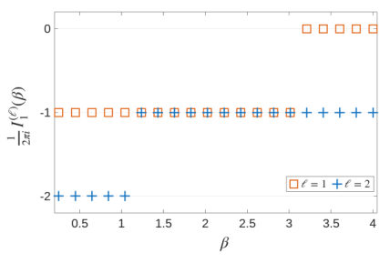
<figcaption class="paper-figure-caption"><b>Fig 1.</b> FIG. 2. Regularised component of the dispersive Berry phase as a function of the GTO broadening β in units of 2πi. The winding number m and the lattice constant a have been set equal to 1.</figcaption>
</figure>
<figure class="paper-figure-card">
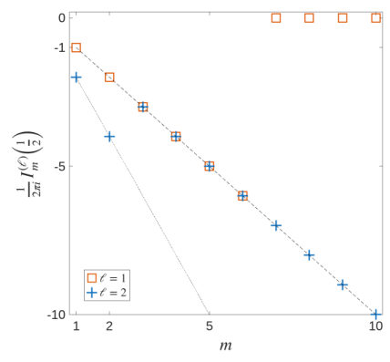
<figcaption class="paper-figure-caption"><b>Fig 2.</b> FIG. 1. Regularised component of the dispersive Berry phase as a function of the winding number m in units of 2πi. The system is defined by the GTO broadening β = 1</figcaption>
</figure>
<figure class="paper-figure-card">
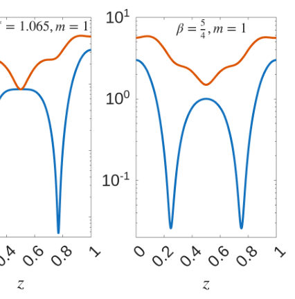
<figcaption class="paper-figure-caption"><b>Fig 3.</b> FIG. 3. Absolute value of the functions f2(z) and g2(z) along the real axis at increasing values from left to right of the GTO broadening β.</figcaption>
</figure>
<figure class="paper-figure-card">
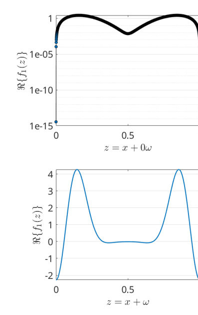
<figcaption class="paper-figure-caption"><b>Fig 4.</b> FIG. 1. Real and imaginary component of f1, β = 0.5, ω = 1</figcaption>
</figure>
<figure class="paper-figure-card">
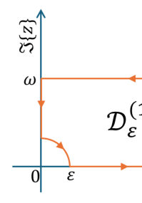
<figcaption class="paper-figure-caption"><b>Fig 5.</b> FIG. 2. Fundamental domain D(1) ε in the complex plane, with deformed boundary to avoid zeros</figcaption>
</figure>
</div>

<p><strong>Summary.</strong> This theoretical paper analyzes how quasi-periodicity dictates discontinuities in the Berry phase for electronic states in crystals. By employing advanced complex analysis techniques involving Jacobi theta functions, the authors show that these jumps are fundamentally linked to topological invariants and structural parameters like GTO broadening. The work provides a deep mathematical understanding of geometric phases in periodic quantum systems.</p>
<p><strong>Why it may be interesting.</strong> Although focused on solid-state topology, the rigorous mathematical techniques involving path dependence, regularization, and functional identities derived from periodicity are highly relevant to understanding topological phases in open quantum systems or lattice models where boundary conditions induce non-trivial global properties.</p>
<details>
<summary>Detailed structure</summary>
<p><strong>Main problem.</strong> The paper investigates the Berry phase discontinuity that is enforced by quasi-periodicity when calculating electronic states in crystalline materials.</p>
<p><strong>Main result.</strong> Non-analytical jumps in the Berry phase are shown to arise from the quasi-periodicity of the scaled overlap function, which links structural parameters (like GTO broadening) to topological invariants.</p>
<p><strong>Method.</strong> The analysis employs complex contour integration techniques, utilizing properties of Jacobi theta functions and exploiting quasi-symmetries to regularize the calculation of the Berry connection.</p>
<p><strong>Model / system.</strong> The study models electronic states in crystals using Riemann-Bloch states constructed from Gaussian-type atomic orbitals (GTOs). The analysis considers paths over both open and non-contractible closed loops in reciprocal space.</p>
<p><strong>Key observables.</strong> Berry phase ($\gamma$), position expectation value $\langle\hat{E}_2(\xi)
angle$, and the dispersive component of the Berry connection.</p>
<p><strong>Important parameters / regimes.</strong> Winding number ($m$), GTO broadening ($eta$), and the periodicity parameter ($\omega$).</p>
<p><strong>Assumptions / limitations.</strong> The analysis assumes spatial separability of electronic states and lacks spin polarization; care must be taken regarding the fragility of relating the exponential of the Berry phase to $|\langle Z(0)|\dots
angle|$.</p>
<p><strong>Figures summary.</strong> Figures illustrate the regularized dispersive Berry phase dependence on winding number ($m$) and GTO broadening ($eta$), and show the real/imaginary components of key functions like $f_1$ and $f_2$ in the complex plane.</p>
<p><strong>Paper structure.</strong> The paper progresses by first establishing the general framework using RBSs, then applying complex analysis (Argument Principle) to derive closed forms for the Berry phase using theta functions, and finally analyzing the quasi-periodic recurrence relations governing these functions.</p>
</details>
<details>
<summary>Abstract</summary>
<p>The Berry phase of an isolated electronic state is evaluated for different integration paths in reciprocal space, thanks to Riemann-Bloch states providing a consistent description in the whole Brillouin zone.   The relationship with the bounded position operator is investigated for the open-path Berry phase and with different form factors of the constituent Gaussian type atomic orbitals (GTOs).   When the Berry phase is evaluated over a closed loop in reciprocal space, a regularisation procedure in the complex plane is adopted and additional \textit{quasi}-symmetries are exploited here for the first time in order to rationalise the occurrence of non-analytical jumps as a function of the winding number or of the GTO broadening.</p>
</details>
<p><sub><a href="#top">↑ back to top</a></sub></p>

<p><a id="paper-2608.14383"></a></p>
<h3 id="floquet-superlattices-and-edge-states-in-graphene-nanoribbons"><a href="http://arxiv.org/abs/2608.14383v1">Floquet Superlattices and Edge States in Graphene Nanoribbons</a></h3>
<p><strong>Authors:</strong> Siam Sarower, Jonathon Dvorscak, Nancy P. Sandler, Mahmoud M. Asmar<br>
<strong>Type:</strong> theory · <strong>Category:</strong> other · <strong>PDF:</strong> <a href="https://arxiv.org/pdf/2608.14383v1">https://arxiv.org/pdf/2608.14383v1</a><br>
<strong>Analysis basis:</strong> full PDF text, analyzed in chunks
<strong>Topic relevance:</strong> <code>analog quantum simulation</code> <strong>3/5</strong> · <code>interference shaping light</code> <strong>3/5</strong> · <code>Keldysh / 2PI / non-Gaussian methods</code> <strong>2/5</strong> · <code>driven-dissipative phase transition</code> <strong>2/5</strong> · <code>Frenkel-Kontorova</code> <strong>1/5</strong> · <code>methods for driven-dissipative</code> <strong>1/5</strong> · <code>non-equilibrium universality</code> <strong>1/5</strong></p>
<div class="figure-strip-hint">↔ Scroll figures horizontally</div>
<div class="paper-figures-scroll">
<figure class="paper-figure-card">
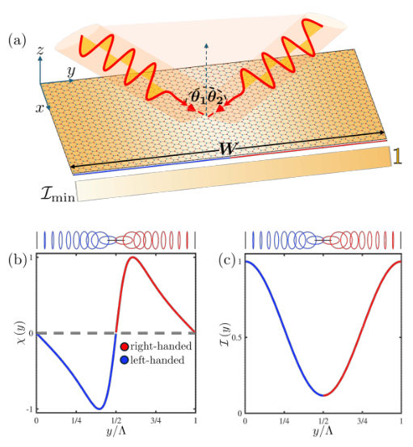
<figcaption class="paper-figure-caption"><b>Fig 1.</b> FIG. 1. Optical profiles produced by two coherent tilted beams incident on a zigzag graphene nanoribbon for θ1 = −θ2 = 70◦and ϕ1 = ϕ2 −π = 0. (a) Schematic of the driven ribbon, showing the spatially modulated in-plane intensity I(y) and the beam geometry. (b) Normalized handedness χ(y); the dashed line marks locally linear polarization, χ = 0, while blue and red indicate opposite handedness. (c) Normal- ized in-plane intensity profile I(y). The polarization ellipses above (b) and (c) illustrate the local polarization state across one optical period.</figcaption>
</figure>
<figure class="paper-figure-card">
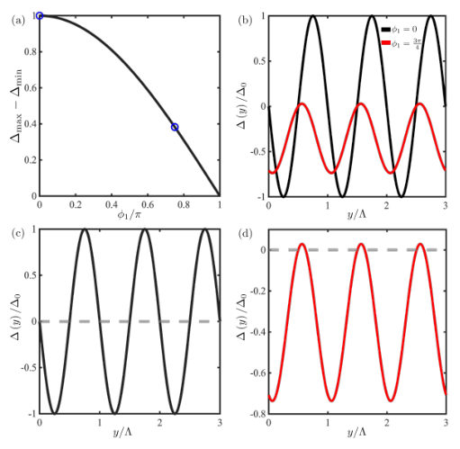
<figcaption class="paper-figure-caption"><b>Fig 2.</b> FIG. 2. (a) Mass contrast ∆max −∆min as a function of ϕ1, with ϕ2 = π kept fixed; blue dots indicate the phases used in (b)–(d). (b) Normalized mass profiles ∆(y)/∆0 for ϕ1 = 0 and ϕ1 = 3π/4. (c),(d) Corresponding real-space mass domains.</figcaption>
</figure>
<figure class="paper-figure-card">
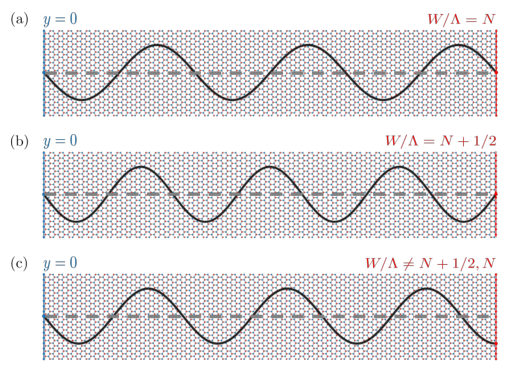
<figcaption class="paper-figure-caption"><b>Fig 3.</b> FIG. 3. Boundary matching of the Floquet mass profile ∆(y) in a finite zigzag graphene nanoribbon. The black curve shows ∆(y), the gray dashed line marks ∆= 0, and the bound- aries are at y = 0 and y = W. (a) Integer edge matching, W/Λ = N, with both boundaries at equivalent mass nodes. (b) Half-integer edge matching, W/Λ = N + 1/2, where the right boundary also lies at a mass node. (c) Edge mismatch, W/Λ ̸= N and W/Λ ̸= N + 1/2, where the right boundary samples a finite local mass. Here N ∈Z+.</figcaption>
</figure>
<figure class="paper-figure-card">
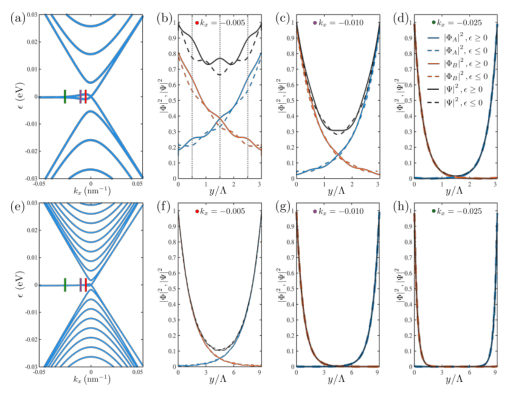
<figcaption class="paper-figure-caption"><b>Fig 4.</b> FIG. 5. Floquet spectra and edge-state profiles for irradiated zigzag graphene nanoribbons with W = 3Λ (a)–(d) and W = 9Λ (e)–(h). The results are for the K valley (τ = +1) and the symmetric two-beam configuration θ1 = −θ2 = 70◦, ϕ1 = 0, and ϕ2 = π, with ℏvF = 0.66 eV nm, Λ = 66 nm, and ∆0 = 4.0 meV, as defined in Eq. (21). (a),(e) Quasienergy spectra; the colored vertical markers indicate kx = −0.005, −0.010, and −0.025 nm−1. (b)–(d),(f)–(h) Sublattice-resolved and total probability densities, |ΦA|2, |ΦB|2, and |Ψ|2.</figcaption>
</figure>
<figure class="paper-figure-card">
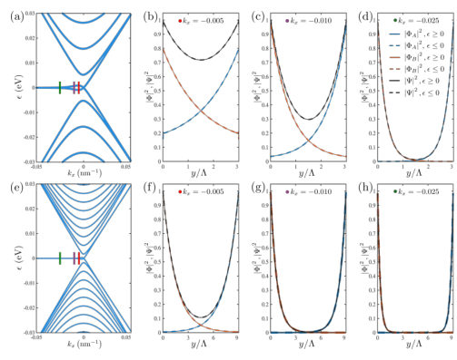
<figcaption class="paper-figure-caption"><b>Fig 5.</b> FIG. 4. Equilibrium energy spectra and edge-state profiles of undriven zigzag graphene nanoribbons with W = 3Λ (a)– (d) and W = 9Λ (e)–(h), where Λ = 66 nm is used as a reference length for comparison with the irradiated sys- tem. (a),(e) Energy spectra at the K valley (τ = +1); the colored vertical markers indicate kx = −0.005, −0.010, and −0.025 nm−1. (b)–(d),(f)–(h) Corresponding sublattice- resolved densities |ΦA|2 and |ΦB|2 and total density |Ψ|2.</figcaption>
</figure>
</div>

<p><strong>Summary.</strong> The paper analyzes how structured light can imprint periodic potentials (superlattices) onto graphene nanoribbons. By modeling the system using Floquet theory and continuum Hamiltonians, the authors show that the resulting optical potential can selectively split the energy levels of edge states in a way that depends on the ribbon's width relative to the light pattern period. This demonstrates a powerful, tunable method for valley-selective control in nanoscale Dirac materials.</p>
<p><strong>Why it may be interesting.</strong> This work directly bridges quantum optics (Floquet engineering) with condensed matter physics (graphene edge states), providing a concrete mechanism for controlling electronic properties via external light fields, which is highly relevant to AMO/quantum photonics interfaces.</p>
<details>
<summary>Detailed structure</summary>
<p><strong>Main problem.</strong> The study investigates how light-induced periodic potentials, forming Floquet superlattices, modify the edge states of finite graphene nanoribbons.</p>
<p><strong>Main result.</strong> The work establishes that light-induced superlattices provide a tunable method for achieving valley selectivity by controlling the quasienergy splitting of edge states based on the matching between optical periodicity and ribbon width.</p>
<p><strong>Method.</strong> The analysis uses continuum Hamiltonian models, deriving an effective time-independent Hamiltonian in the off-resonant Floquet limit via perturbation theory and solving boundary value problems for finite ribbons.</p>
<p><strong>Model / system.</strong> The system is a zigzag graphene nanoribbon driven by two coherent, tilted laser beams, creating a photo-induced superlattice potential. The physics is modeled using valley-resolved continuum Hamiltonians near the K and K' valleys.</p>
<p><strong>Key observables.</strong> Quasienergy spectrum splitting ($\delta_{	ext{edge}}$), local intensity ($I(y)$), and normalized handedness ($\chi(y)$).</p>
<p><strong>Important parameters / regimes.</strong> Optical drive frequency ($\Omega$), ribbon width ($W$), optical superlattice period ($\Lambda$), and the ratio $W/\Lambda$.</p>
<p><strong>Assumptions / limitations.</strong> The analysis relies on the off-resonant approximation for the Floquet Hamiltonian, treating the system as a continuum model near the Dirac points, and employing specific limit procedures (finite mass $    o$ regulator removal $  o$ hard-wall limit).</p>
<p><strong>Figures summary.</strong> Figures illustrate the optical profiles ($I(y)$ and $\chi(y)$) for the driven ribbon and show numerical results of the signed quasienergy splitting ($\delta_{	ext{edge}}$) as a function of $W/\Lambda$.</p>
<p><strong>Paper structure.</strong> The paper progresses by first characterizing the optical field profile, then deriving the effective Hamiltonian in the Floquet regime using perturbation theory, and finally applying this to model the edge state hybridization within the finite ribbon geometry.</p>
</details>
<details>
<summary>Abstract</summary>
<p>Structured light provides a route to imprint spatially patterned Floquet potentials onto quantum materials. As a particular example, we study a zigzag graphene nanoribbon driven by two coherent tilted beams, whose interference creates a periodic polarization pattern that gives rise to a photo-induced superlattice. The matching between the periodicity of the optical field and the nanoribbon width leads to two regimes in the quasienergy spectrum: matched profiles preserve degenerate edge branches, while mismatched profiles yield a boundary-induced gap that survives in wide ribbons. We propose a two-edge model that captures this splitting through residual hybridization and the boundary-sampled optical field. The quasienergy gap reverses between valleys, leading to a valley-selective boundary response. Our results establish light-induced superlattices as a flexible method for valley selectivity in finite-size Dirac-like materials through tunable edge-state quasienergy splitting.</p>
</details>
<p><sub><a href="#top">↑ back to top</a></sub></p>

<p><a id="paper-2608.13743"></a></p>
<h3 id="nonlinear-wave-dynamics-in-photonic-time-crystals"><a href="http://arxiv.org/abs/2608.13743v1">Nonlinear wave dynamics in photonic time crystals</a></h3>
<p><strong>Authors:</strong> Fabio Biancalana<br>
<strong>Type:</strong> theory · <strong>Category:</strong> other · <strong>PDF:</strong> <a href="https://arxiv.org/pdf/2608.13743v1">https://arxiv.org/pdf/2608.13743v1</a><br>
<strong>Analysis basis:</strong> full PDF text, analyzed in chunks
<strong>Topic relevance:</strong> <code>driven-dissipative phase transition</code> <strong>3/5</strong> · <code>methods for driven-dissipative</code> <strong>3/5</strong> · <code>interference shaping light</code> <strong>2/5</strong> · <code>non-equilibrium universality</code> <strong>2/5</strong> · <code>analog quantum simulation</code> <strong>1/5</strong> · <code>correlated / nonlocal dissipation</code> <strong>1/5</strong> · <code>scars &amp; prethermalization</code> <strong>1/5</strong></p>
<div class="figure-strip-hint">↔ Scroll figures horizontally</div>
<div class="paper-figures-scroll">
<figure class="paper-figure-card">
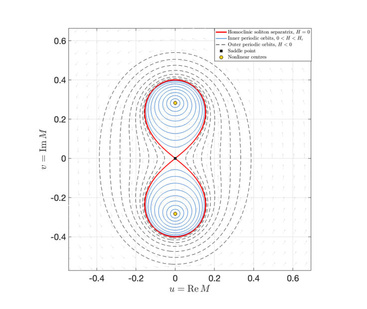
<figcaption class="paper-figure-caption"><b>Fig 1.</b> FIG. 1: Hamiltonian phase portrait of the autonomous first gap reduction for ∆= 0.4 and a = a0 ≡4/(4 −∆2) ≃1.041¯6, the point of maximum linear gain. The black square at the origin is the hyperbolic saddle, and the yellow circles are the two nonlinear centres of Eq. (29). Blue solid contours are the two disconnected families of periodic trajectories with 0 &lt; H &lt; Hc, each surrounding one centre. The thick red ‘figure of eight’ is the exact zero-Hamiltonian separatrix; its upper and lower lobes are the symmetry-related homoclinic temporal gap solitons M(τ) and −M(τ). Black dashed contours are the closed outer periodic trajectories with H &lt; 0, which enclose both centres and the saddle point.</figcaption>
</figure>
<figure class="paper-figure-card">
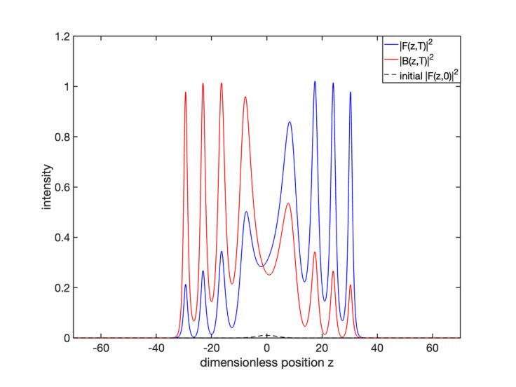
<figcaption class="paper-figure-caption"><b>Fig 2.</b> FIG. 2: Nonlinear fragmentation of the weak forward-only Gaussian input in Eq. (54), with A0 = 0.1 and w0 = 5, at the final observation time t = T = 15. The blue and red solid curves show the forward and backward envelope intensities |F(z, T)|2</figcaption>
</figure>
<figure class="paper-figure-card">
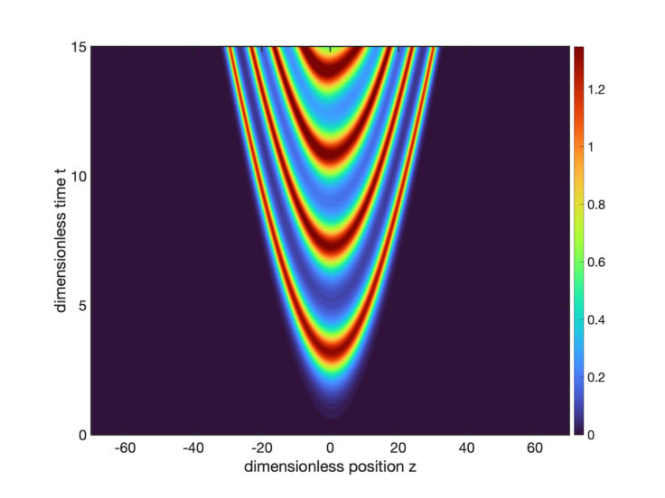
<figcaption class="paper-figure-caption"><b>Fig 3.</b> FIG. 3: Spatiotemporal evolution of the cycle-averaged field intensity Iav(z, t) = |F(z, t)|2 + |B(z, t)|2 for the weak forward- only Gaussian input of Eq. (54). The initially smooth pulse is first amplified by the unstable modes of the fundamental momentum gap while the backward component is generated from zero. Nonlinear phase accumulation subsequently makes the evolution spatially nonuniform and nucleates multiple spatiotemporal gap solitons, with prominent structures propagating in both directions consistently with the conserved momentum P. Input parameters are identical to those of Fig. 2.</figcaption>
</figure>
<figure class="paper-figure-card">
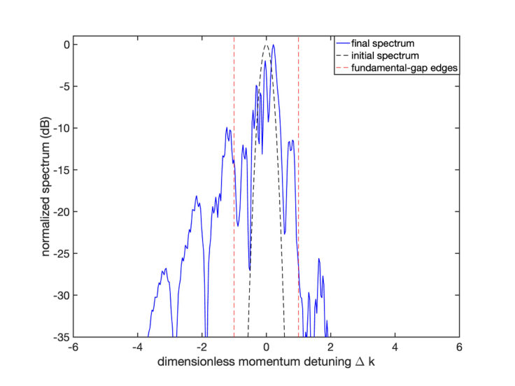
<figcaption class="paper-figure-caption"><b>Fig 4.</b> FIG. 4: Momentum supercontinuum generation from the weak forward-only Gaussian input of Eq. (54). The plotted quantity is the envelope momentum spectrum defined in Eq. (55). The black dashed and blue solid curves are the initial and final spectra, respectively. The two red dashed vertical lines mark the edges ∆k = ±1 of the fundamental momentum gap. The narrow input spectrum lies predominantly inside the gap, whereas the final envelope spectrum goes well beyond both edges as a result of nonlinear localisation and spatiotemporal gap soliton formation. Input parameters are identical to those of Fig. 2.</figcaption>
</figure>
<figure class="paper-figure-card">
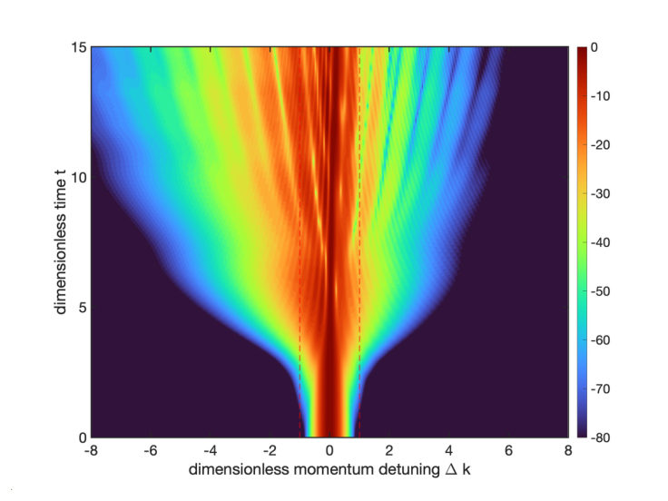
<figcaption class="paper-figure-caption"><b>Fig 5.</b> FIG. 5: Evolution of the momentum spectrum Eq. (55) for the same weak forward-only Gaussian input as in Fig. 4. The dashed vertical lines mark the fundamental gap edges ∆k = ±1. The initially narrow distribution broadens progressively beyond the gap and develops distinct spectral ‘fingers’ associated with the nucleated spatiotemporal gap solitons. Input parameters are identical to those of Fig. 2.</figcaption>
</figure>
</div>

<p><strong>Summary.</strong> This paper analyzes nonlinear wave propagation in Photonic Time Crystals by reducing the governing equations to a nonlinear Mathieu form. It analytically characterizes gap solitons using Hamiltonian phase portraits and then simulates how localized pulses generate broad momentum supercontinua due to nonlinear saturation effects. This work provides a theoretical framework linking parametric gain, soliton dynamics, and spectral broadening in time-varying optical media.</p>
<p><strong>Why it may be interesting.</strong> This work is highly relevant as it applies advanced concepts from Hamiltonian mechanics and dynamical systems (homoclinics) to model complex wave phenomena like spectral broadening in engineered optical media, bridging classical optics with nonlinear dynamics theory.</p>
<details>
<summary>Detailed structure</summary>
<p><strong>Main problem.</strong> The paper aims to develop a unified description of nonlinear wave dynamics, particularly focusing on gap solitons and supercontinuum generation in Photonic Time Crystals (PTCs).</p>
<p><strong>Main result.</strong> It establishes a direct connection between Floquet amplification, nonlinear saturation, homoclinic dynamics, and momentum space spectral broadening in these nonlinear photonic systems.</p>
<p><strong>Method.</strong> The analysis combines analytical techniques like Hamiltonian phase portrait mapping for reduced equations with numerical simulations of coupled wave envelopes to track spectral evolution.</p>
<p><strong>Model / system.</strong> The system is a PTC governed by Maxwell's equations with cubic nonlinearity and time-periodic refractive index. For monochromatic waves, this reduces to a nonlinear Mathieu equation; for localized pulses, it involves forward/backward coupled-mode descriptions.</p>
<p><strong>Key observables.</strong> Momentum supercontinuum spectrum ($    ext{Senv}(\Delta k, t)$), temporal gap soliton solutions, and the point of maximum linear parametric gain.</p>
<p><strong>Important parameters / regimes.</strong> The modulation depth ($\Delta$), nonlinearity strength ($\chi^{(3)}$), and the wave number relative to the Bragg gap edges ($a$ vs $\Delta$).</p>
<p><strong>Assumptions / limitations.</strong> Key approximations include assuming an instantaneous Kerr response and using shallow modulation depth expansions to derive the core nonlinear Mathieu equation.</p>
<p><strong>Figures summary.</strong> Figures illustrate the spectral broadening (supercontinuum generation) for both weak and strong input seeds, showing abrupt spectral tails correlated with extreme localization events.</p>
<p><strong>Paper structure.</strong> The paper progresses from deriving the master nonlinear Mathieu equation for monochromatic waves to analytically solving its homoclinic dynamics. It then extends this analysis to spatially localized pulses, culminating in simulations demonstrating momentum supercontinuum generation via nonlinear coupling.</p>
</details>
<details>
<summary>Abstract</summary>
<p>Maxwell's wave equation in the presence of a cubic nonlinearity and a periodically time-varying refractive index (a photonic time crystal) is reduced, for spatially monochromatic waves, to a nonlinear Mathieu equation. Near the principal momentum gap this equation admits an autonomous two-dimensional reduction whose complete Hamiltonian phase portrait can be obtained analytically. We derive the two homoclinic separatrices corresponding to temporally localised momentum gap solitons, identify the nonlinear centres and the critical Hamiltonian value $H_c$, and calculate the point of maximum linear parametric gain. We then consider spatially localised pulses and show how the nucleation of multiple spatiotemporal gap solitons can produce a broad supercontinuum in momentum space; for stronger seeds, transient extreme nonlinear localisation can accompany an abrupt additional broadening of this momentum spectrum. These results establish a direct connection between Floquet amplification, nonlinear saturation, homoclinic dynamics, and momentum space spectral broadening in nonlinear photonic time crystals.</p>
</details>
<p><sub><a href="#top">↑ back to top</a></sub></p>

<p><a id="paper-2608.14108"></a></p>
<h3 id="spectral-stability-and-slow-fast-structure-of-traveling-waves-in-a-regularized-sine-gordon-equation"><a href="http://arxiv.org/abs/2608.14108v1">Spectral stability and slow--fast structure of traveling waves in a regularized sine--Gordon equation</a></h3>
<p><strong>Authors:</strong> Vassilios M Rothos<br>
<strong>Type:</strong> theory · <strong>Category:</strong> other · <strong>PDF:</strong> <a href="https://arxiv.org/pdf/2608.14108v1">https://arxiv.org/pdf/2608.14108v1</a><br>
<strong>Analysis basis:</strong> full PDF text, analyzed in chunks
<strong>Topic relevance:</strong> <code>Keldysh / 2PI / non-Gaussian methods</code> <strong>3/5</strong> · <code>Frenkel-Kontorova</code> <strong>2/5</strong> · <code>analog quantum simulation</code> <strong>2/5</strong> · <code>driven-dissipative phase transition</code> <strong>2/5</strong> · <code>methods for driven-dissipative</code> <strong>2/5</strong> · <code>correlated / nonlocal dissipation</code> <strong>1/5</strong> · <code>non-equilibrium universality</code> <strong>1/5</strong></p>
<div class="figure-strip-hint">↔ Scroll figures horizontally</div>
<div class="paper-figures-scroll">
<figure class="paper-figure-card">
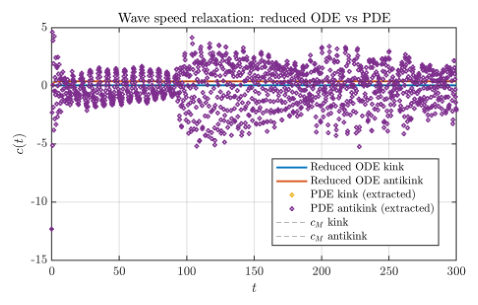
<figcaption class="paper-figure-caption"><b>Fig 1.</b> Figure 1. Comparison between reduced collective–coordinate dynamics and direct PDE simulations for kink and antikink propagation.</figcaption>
</figure>
<figure class="paper-figure-card">
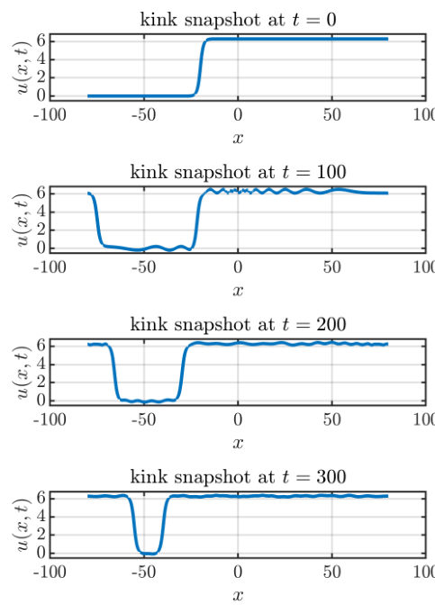
<figcaption class="paper-figure-caption"><b>Fig 2.</b> Figure 2. Representative kink and antikink profiles at selected times, showing coher- ent propagation with only weak radiative shedding.</figcaption>
</figure>
<figure class="paper-figure-card">
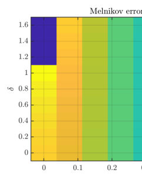
<figcaption class="paper-figure-caption"><b>Fig 3.</b> Figure 3. Heatmap of the Melnikov error c∞−cM for the kink branch in the (δ, d) plane. The error remains bounded and varies smoothly across the parameter domain.</figcaption>
</figure>
<figure class="paper-figure-card">
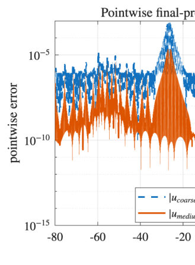
<figcaption class="paper-figure-caption"><b>Fig 4.</b> Figure 4. Pointwise error in the final profile relative to the finest grid (N = 2048, ∆t = 0.0125), shown on a logarithmic scale. The error decreases substantially under refine- ment and is largest near the steep kink and antikink fronts.</figcaption>
</figure>
<figure class="paper-figure-card">
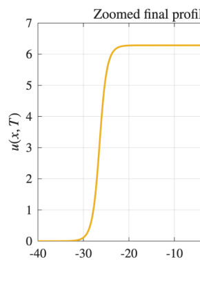
<figcaption class="paper-figure-caption"><b>Fig 5.</b> Figure 5. Zoomed comparison of the final profile u(x, T) in the interaction region for the three resolutions (N, ∆t) = (512, 0.05), (1024, 0.025), and (2048, 0.0125). The curves are visually indistinguishable, indicating that the final profile is numerically converged.</figcaption>
</figure>
</div>

<p><strong>Summary.</strong> This paper analyzes the stable propagation speeds and spectral stability of kinks in a highly regularized sine-Gordon equation modeling Josephson junctions. It combines geometric reduction techniques with advanced mathematical tools like the Evans function to prove that the solutions are spectrally stable under various physical perturbations.</p>
<p><strong>Why it may be interesting.</strong> While focused on classical nonlinear PDEs, the rigorous application of spectral stability tools (Evans functions) and singular perturbation methods mirrors techniques used to analyze quantum field theories or effective Hamiltonians derived from complex many-body systems.</p>
<details>
<summary>Detailed structure</summary>
<p><strong>Main problem.</strong> The study investigates the dynamics, speed selection, and spectral stability of traveling kink and antikink solutions within a regularized sine-Gordon equation.</p>
<p><strong>Main result.</strong> The analysis confirms that for the considered parameter regime, no additional unstable point spectrum bifurcates from either the origin or the essential spectrum edges, indicating robust spectral stability.</p>
<p><strong>Method.</strong> The work employs a combination of collective-coordinate reduction (Melnikov analysis) and advanced spectral theory using Evans function techniques adapted for slow-fast systems.</p>
<p><strong>Model / system.</strong> The model is a dissipative and regularized sine-Gordon equation, motivated by describing fluxon dynamics in long Josephson junctions. It includes damping, bias forcing, and two distinct fourth-order regularization terms (inertial and elliptic).</p>
<p><strong>Key observables.</strong> Asymptotic propagation speeds ($c$), spectral stability eigenvalues ($\lambda$), Melnikov function values, and the winding number/argument variation of the Evans function.</p>
<p><strong>Important parameters / regimes.</strong> The small parameter $\varepsilon$, and the regularization parameters $(\alpha, eta, \gamma, \delta, d)$ are crucial; analysis is performed in the limit $\varepsilon 	o 0$.</p>
<p><strong>Assumptions / limitations.</strong> Key assumptions include assuming nondegeneracy conditions (e.g., $\delta c^2 - d 
eq 0$) and relying on small-$\varepsilon$ approximations derived from Fenichel theory.</p>
<p><strong>Figures summary.</strong> Figures compare wave-speed relaxation predicted by reduced ODEs against full PDE simulations, show representative kink profiles, map the Melnikov error across parameter space, and display numerical evidence (winding numbers/argument variations) confirming spectral stability near $\lambda=0$ and essential spectrum edges.</p>
<p><strong>Paper structure.</strong> The paper proceeds by first deriving a slow-fast reduced system via collective coordinates to predict speeds. It then applies Evans function theory, using specialized techniques like square-root transformations for edge analysis, to rigorously prove the absence of unstable eigenvalues in both spectral regimes.</p>
</details>
<details>
<summary>Abstract</summary>
<p>We investigate the dynamics and spectral stability of traveling kink and antikink solutions in a dissipative sine--Gordon equation with two distinct fourth--order regularization mechanisms: a mixed space--time (inertial) term and a purely spatial (elliptic) term. The model includes damping, bias forcing, and higher--order dissipative effects, and is motivated by refined descriptions of fluxon dynamics in long Josephson junctions. Using a collective--coordinate reduction, we derive a Melnikov--type condition for speed selection, yielding explicit predictions for asymptotic propagation speeds, which are validated by direct numerical simulations of the full partial differential equation. Spectral stability is analyzed using Evans function techniques adapted to the singular slow--fast structure induced by the regularization. By formulating the linearized problem on a consistent--splitting domain, we show that no additional point spectrum bifurcates from the origin. Near the edges of the essential spectrum, a square--root transformation is used to resolve branch singularities and establish analyticity in a lifted spectral variable. Numerical Evans function computations near $λ=0$ and near the essential spectrum edges confirm the analytical results, indicating absence of unstable eigenvalues for both kink and antikink solutions.</p>
</details>
<p><sub><a href="#top">↑ back to top</a></sub></p>

<p><a id="paper-2608.14295"></a></p>
<h3 id="asynchronous-breathers-in-hamiltonian-squid-metamaterials"><a href="http://arxiv.org/abs/2608.14295v1">Asynchronous Breathers in Hamiltonian SQUID Metamaterials</a></h3>
<p><strong>Authors:</strong> N. Lazarides<br>
<strong>Type:</strong> theory · <strong>Category:</strong> disordered systems and neural networks · <strong>PDF:</strong> <a href="https://arxiv.org/pdf/2608.14295v1">https://arxiv.org/pdf/2608.14295v1</a><br>
<strong>Analysis basis:</strong> full PDF text, analyzed in chunks
<strong>Topic relevance:</strong> <code>Frenkel-Kontorova</code> <strong>3/5</strong> · <code>analog quantum simulation</code> <strong>2/5</strong> · <code>scars &amp; prethermalization</code> <strong>2/5</strong> · <code>driven-dissipative phase transition</code> <strong>1/5</strong> · <code>methods for driven-dissipative</code> <strong>1/5</strong> · <code>non-equilibrium universality</code> <strong>1/5</strong></p>
<div class="figure-strip-hint">↔ Scroll figures horizontally</div>
<div class="paper-figures-scroll">
<figure class="paper-figure-card">
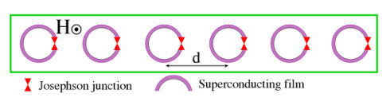
<figcaption class="paper-figure-caption"><b>Fig 1.</b> FIG. 2. (Color online) Schematic of a one-dimensional SQUID metamaterial in a planer configuration.</figcaption>
</figure>
<figure class="paper-figure-card">
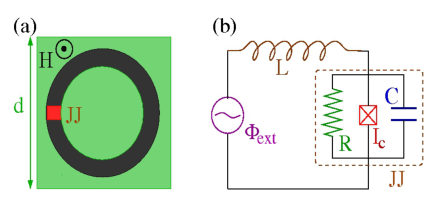
<figcaption class="paper-figure-caption"><b>Fig 2.</b> FIG. 1. (Color online) (a) Schematic of an rf SQUID in a field H, which can be composed by dc (constant) and/or ac (time-periodic) components, and (b) equivalent electrical cir- cuit. The real Josephson junction is represented by the circuit elements within the brown-dashed box.</figcaption>
</figure>
<figure class="paper-figure-card">
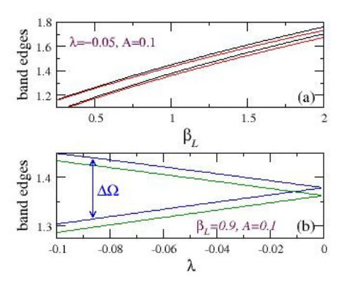
<figcaption class="paper-figure-caption"><b>Fig 3.</b> FIG. 4. (Color online) (a) Linear (black curves) and nonlinear (red curves, A = 0.1) frequency band edges as a function of the SQUID parameter βL for λ = −0.05. (b) Linear (blue curves) and nonlinear (green curves, A = 0.1) frequency band edges as a function of the coupling coefficient λ for βL = 0.9.</figcaption>
</figure>
<figure class="paper-figure-card">
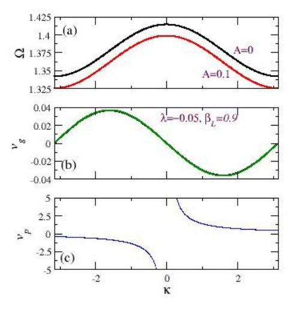
<figcaption class="paper-figure-caption"><b>Fig 4.</b> FIG. 3. (Color online) (a) Linear (black curve) and nonlinear (red curve) frequency dispersion of the SQUID metamaterial as a function of the normalized wavenumber κ, plotted using Eqs. (11) and (17), respectively, for λ = −0.05, βL = 0.9, and A = 0.1. (b) The corresponding group velocity dispersion vg as a function of κ, and (c) the corresponding phase velocity dispersion vp as a function of κ.</figcaption>
</figure>
<figure class="paper-figure-card">
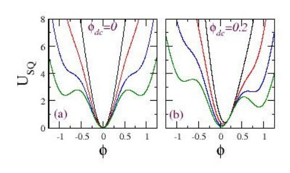
<figcaption class="paper-figure-caption"><b>Fig 5.</b> FIG. 5. (Color online) The SQUID (on-site) potential USQ as a function of the flux ϕ through the SQUID loop for (a) ϕdc = 0; (b) ϕdc = 0.2. In both figures, the SQUID parameter takes the values βL = 0.9 (black curves), βL = 1.8 (red curves), βL = 3.6 (blue curves), and βL = 7.2 (green curves).</figcaption>
</figure>
</div>

<p><strong>Summary.</strong> This paper numerically investigates the formation and properties of asynchronous discrete breathers in a 1D array of SQUIDs acting as a metamaterial. By analyzing nonlinear localization using the energetic participation ratio, the authors confirm the existence of these novel localized modes. The work provides insights into how nonlinearity and external bias govern energy confinement in superconducting quantum structures.</p>
<p><strong>Why it may be interesting.</strong> The study bridges concepts from nonlinear wave physics (discrete breathers) with superconducting circuits, providing a concrete physical platform for studying energy localization in structured media, which is relevant to understanding complex dynamics in many-body systems.</p>
<details>
<summary>Detailed structure</summary>
<p><strong>Main problem.</strong> The study investigates nonlinear localization properties, specifically the existence and nature of asynchronous discrete breathers (DBs), in a Hamiltonian SQUID metamaterial array.</p>
<p><strong>Main result.</strong> The authors found evidence for a new type of asynchronous DB that was previously overlooked, and they characterized transitions between delocalized and localized states using the energetic participation ratio.</p>
<p><strong>Method.</strong> Numerical investigation using time evolution simulations (Runge-Kutta) initialized with single-site excitations, coupled with analytical approximations like linearization and plane wave solutions to derive dispersion relations.</p>
<p><strong>Model / system.</strong> The system is a one-dimensional array of SQUIDs acting as a metamaterial. The dynamics are governed by a nonlinear, conservative Hamiltonian equation derived from the RCSJ model, allowing for a DC flux bias ($\Phi_{dc}$).</p>
<p><strong>Key observables.</strong> Energetic participation ratio (epr), breather oscillation frequency ($\omega_{br}$), and linear/nonlinear frequency dispersion relations.</p>
<p><strong>Important parameters / regimes.</strong> DC flux bias ($\phi_{dc}$), coupling coefficient ($\lambda$), single-site initial excitation amplitude ($\phi_{in}$), and the SQUID nonlinearity parameter ($eta_L$).</p>
<p><strong>Assumptions / limitations.</strong> The analysis assumes nearest-neighbor coupling dominates, and nonlinear approximations are used for the sine term in the governing equation.</p>
<p><strong>Figures summary.</strong> Figures illustrate schematic circuits (SQUID), frequency dispersion relations comparing linear vs. nonlinear regimes, and power spectra showing localized modes at frequencies distinct from the linear band edges.</p>
<p><strong>Paper structure.</strong> The paper progresses by defining the physical model (SQUID array) and its governing equations; it then analyzes the system's linear spectrum; subsequently, it introduces nonlinearity via approximations to find nonlinear dispersion relations; finally, it numerically investigates localization using initial excitations and measures like epr to confirm DB existence.</p>
</details>
<details>
<summary>Abstract</summary>
<p>A one-dimensional SQUID (superconducting quantum interference device) array/metamaterial is investigated numerically with respect to its localization properties due to nonlinearity in the absence of dissipation and periodic driving. The system possesses a conserved Hamiltonian function representing its energy, and supports localized modes of the discrete breather type even in the presence of a moderately high dc flux bias. The appearance of discrete breathers in that system has been largely overlooked in literature. We find a new type of discrete breather that is asynchronous, meaning that the frequency of oscillation of the SQUID at the central breather site is different than that of the SQUIDs at the other sites of the metamaterial. Nonlinear localization is investigated by initializing the system with a single-site excitation of given amplitude (initial amplitude) for a fixed value of the coupling coefficient, while parameters such as the dc flux bias, the single-site initial excitation amplitude, and/or the SQUID can vary independently. Using the energetic participation ratio as a measure of the degree of localization, the existence of asynchronous highly localized modes and transitions between delocalized (extended) and localized modes re identified.</p>
</details>
<p><sub><a href="#top">↑ back to top</a></sub></p>

<p><a id="paper-2608.13731"></a></p>
<h3 id="properties-of-holographic-superconductors-from-machine-learning"><a href="http://arxiv.org/abs/2608.13731v1">Properties of holographic superconductors from Machine Learning</a></h3>
<p><strong>Authors:</strong> Aliou Togo, Yang Yu, Kaniba Mady Keita, Jian-Pin Wu, Younouss Ham<code>eye Dicko  
**Type:** theory · **Category:** other · **PDF:** &lt;https://arxiv.org/pdf/2608.13731v1&gt;  
**Analysis basis:** full PDF text, analyzed in chunks
**Topic relevance:**</code>Keldysh / 2PI / non-Gaussian methods<code>**3/5** ·</code>methods for driven-dissipative<code>**3/5** ·</code>quantum measurements<code>**2/5** ·</code>analog quantum simulation<code>**1/5** ·</code>driven-dissipative phase transition` <strong>1/5</strong></p>
<div class="figure-strip-hint">↔ Scroll figures horizontally</div>
<div class="paper-figures-scroll">
<figure class="paper-figure-card">
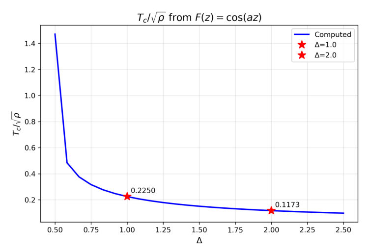
<figcaption class="paper-figure-caption"><b>Fig 1.</b> Figure 1: Tc/√ρ versus ∆obtained from the cosine ansatz F(z) = cos(az). The values at ∆= 1 and ∆= 2 are marked with red stars and numerical annotations.</figcaption>
</figure>
<figure class="paper-figure-card">
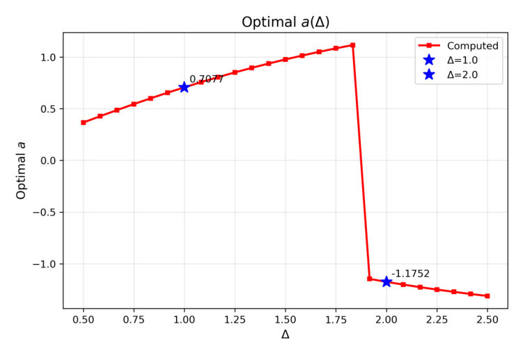
<figcaption class="paper-figure-caption"><b>Fig 2.</b> Figure 2: Optimal parameter a as a function of ∆for the cosine ansatz. The values at ∆= 1 and ∆= 2 are marked with blue stars.</figcaption>
</figure>
<figure class="paper-figure-card">
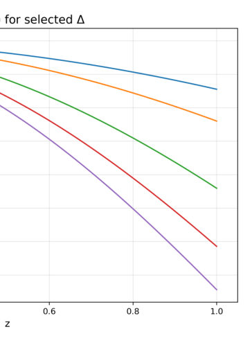
<figcaption class="paper-figure-caption"><b>Fig 3.</b> Figure 3: Optimal F(z) = cos(az) for selected values of ∆: 0.75, 1.0, 1.5, 2.0, and 2.5.</figcaption>
</figure>
<figure class="paper-figure-card">
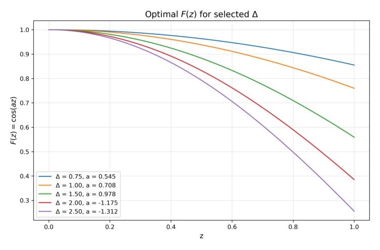
<figcaption class="paper-figure-caption"><b>Fig 4.</b> Figure 4 shows the corresponding minimal λ2 as a function of ∆for the cosine ansatz. The monotonic increase reflects the growing difficulty for the condensate to form for larger operator dimensions.</figcaption>
</figure>
<figure class="paper-figure-card">
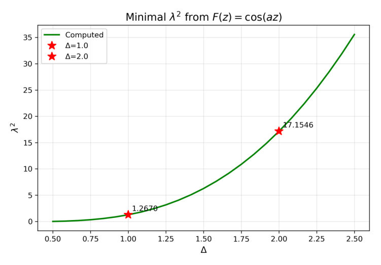
<figcaption class="paper-figure-caption"><b>Fig 5.</b> Figure 4: Minimised λ2 versus ∆from the cosine ansatz. The values at ∆= 1 and ∆= 2 are marked with red stars.</figcaption>
</figure>
</div>

<p><strong>Summary.</strong> This work applies sophisticated numerical optimization techniques, inspired by machine learning principles, to calculate the critical temperature of holographic superconductors. By minimizing a variational functional derived from a Sturm–Liouville problem using flexible polynomial trial functions, the authors achieve high accuracy matching known theoretical results. This demonstrates a powerful computational framework for studying strongly coupled quantum systems.</p>
<p><strong>Why it may be interesting.</strong> While the core physics is condensed matter/gravity, the methodology—using machine learning-inspired optimization and flexible functional forms (polynomial ansatzes)—is highly relevant for solving complex many-body Hamiltonians or finding ground states in quantum systems where exact solutions are intractable.</p>
<details>
<summary>Detailed structure</summary>
<p><strong>Main problem.</strong> The study investigates holographic superconductors by determining their critical temperature ($T_c$) using advanced variational techniques.</p>
<p><strong>Main result.</strong> The combination of analytic trial functions and modern global optimization methods provides a robust, flexible, and highly accurate tool for calculating superconducting properties in these strongly coupled systems.</p>
<p><strong>Method.</strong> A variational approach is employed by minimizing an eigenvalue ($\lambda^2$) derived from reducing the field equation to a Sturm–Liouville problem. Optimization utilizes techniques like L-BFGS-B with multi-start sampling on flexible polynomial ansatzes.</p>
<p><strong>Model / system.</strong> The system modeled is a holographic superconductor, described within the AdS/CFT correspondence framework using a background geometry of an AdS-Schwarzschild planar black hole. The core physics involves solving for the eigenvalue $\lambda$ related to $T_c$.</p>
<p><strong>Key observables.</strong> Critical temperature ($T_c$), the ratio $T_c/\sqrt{
ho}$, and the eigenvalue $\lambda^2(\Delta)$.</p>
<p><strong>Important parameters / regimes.</strong> The conformal dimension ($\Delta$) of the condensing operator, and variational parameters (e.g., coefficients $a_n$ for the polynomial ansatz).</p>
<p><strong>Assumptions / limitations.</strong> The analysis is performed in the 'probe limit' (linearized eigenvalue problem), and accuracy relies on the functional form chosen for the trial functions.</p>
<p><strong>Figures summary.</strong> Figures illustrate the calculated values of $T_c/\sqrt{
ho}$ versus $\Delta$ using both cosine and polynomial ansatzes, demonstrating convergence towards known exact results.</p>
<p><strong>Paper structure.</strong> The paper establishes the variational formulation via a Sturm–Liouville problem for $\lambda^2$. It then applies two increasingly complex trial functions (cosine vs. exponential polynomial) optimized using advanced numerical routines to calculate $T_c/\sqrt{
ho}$ across various values of $\Delta$, confirming consistency with literature.</p>
</details>
<details>
<summary>Abstract</summary>
<p>We investigate holographic superconductors using modern optimisation techniques inspired by machine learning. The critical temperature is obtained by minimising the variational functional for the eigenvalue $λ^2$ with two complementary trial functions: a simple cosine ansatz $F(z)=\cos(a z)$ and a flexible exponential polynomial $F(z)=\exp(\sum_{n=2}^{N} a_n z^n)$, both of which automatically satisfy the standard boundary conditions. For the cosine ansatz, we perform a one-parameter minimisation and obtain $λ^2(Δ)$ and $T_c/\sqrtρ$ over a wide range of $Δ$, including the exact values at $Δ=1$ and $Δ=2$ to high accuracy. The exponential polynomial ansatz, with up to 19 coefficients, is optimised using a multi-start L-BFGS-B algorithm with warm-starting, yielding even better agreement with known exact results. Our numerical data for $λ^2(Δ)$ and $T_c/\sqrtρ$ match the analytical predictions from the literature, confirming the robustness of the variational approach. This work; therefore, demonstrates that a combination of analytic trial functions and modern numerical optimisation provides a powerful, flexible, and efficient tool for exploring holographic superconductors, and can be readily extended to include backreaction or other sectors in this field.</p>
</details>
<p><sub><a href="#top">↑ back to top</a></sub></p>

<p><a id="paper-2608.13770"></a></p>
<h3 id="rapid-kirigami-simulation-using-the-bar-hinge-approach"><a href="http://arxiv.org/abs/2608.13770v1">Rapid Kirigami Simulation using the Bar &amp; Hinge Approach</a></h3>
<p><strong>Authors:</strong> Raj Pradip Khawale, Elaheh Mehdizadeh, John Brigham, Evgueni T. Filipov<br>
<strong>Type:</strong> both · <strong>Category:</strong> numerical methods · <strong>PDF:</strong> <a href="https://arxiv.org/pdf/2608.13770v1">https://arxiv.org/pdf/2608.13770v1</a><br>
<strong>Analysis basis:</strong> full PDF text, analyzed in chunks
<strong>Topic relevance:</strong> <code>methods for driven-dissipative</code> <strong>3/5</strong> · <code>Keldysh / 2PI / non-Gaussian methods</code> <strong>2/5</strong> · <code>analog quantum simulation</code> <strong>2/5</strong> · <code>quantum measurements</code> <strong>1/5</strong></p>
<div class="figure-strip-hint">↔ Scroll figures horizontally</div>
<div class="paper-figures-scroll">
<figure class="paper-figure-card">
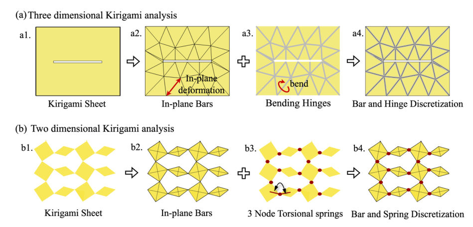
<figcaption class="paper-figure-caption"><b>Fig 1.</b> Figure 1: Representation of the bar and hinge model for a kirigami structure. (a) Representation for a three dimensional kirigami analysis for a rectangular structure with a single cut. Each black line represents a bar for in-plane deformation. Each thick gray line represents a bending hinge. Two triangles can bend along their common edge, as shown by the red marking. (b) Representation for a two dimensional kirigami analysis. Each black line represents a bar for in-plane deformation. Each red dot denotes node torsional spring. Two red bars can rotate along the common red dot, as shown in (3).</figcaption>
</figure>
<figure class="paper-figure-card">
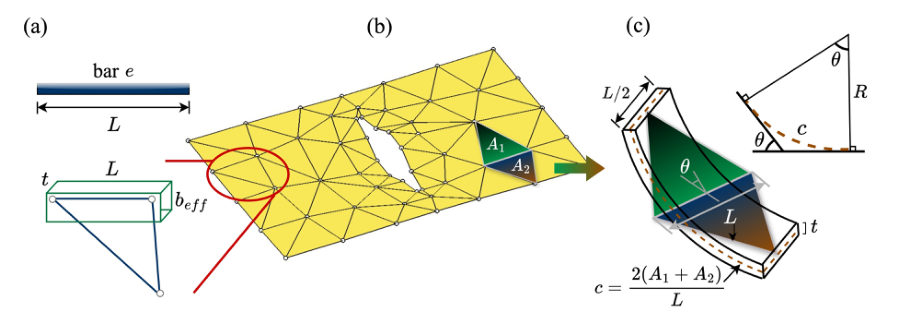
<figcaption class="paper-figure-caption"><b>Fig 2.</b> Figure 2: Bar and hinge element definition. (a) Representation of a bar with a cuboid. 𝐿and 𝑏𝑒𝑓𝑓are the length and the breadth of the bar, respectively, and 𝑡is the thickness of the structure. (b) Discretized kirigami structure. (c) Hinge representation with continuous curvature.</figcaption>
</figure>
<figure class="paper-figure-card">
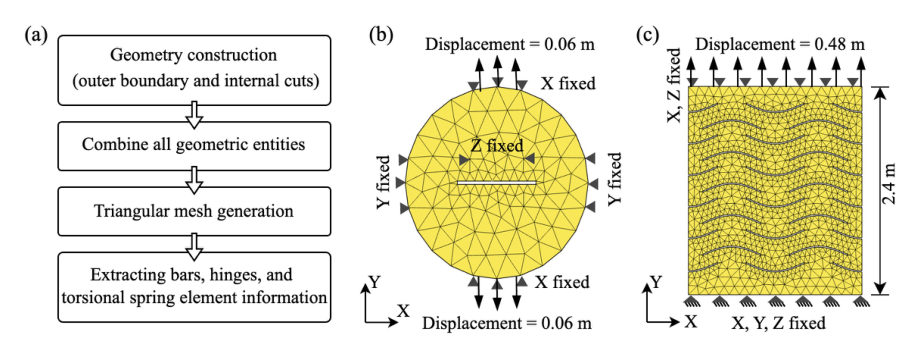
<figcaption class="paper-figure-caption"><b>Fig 3.</b> Figure 3: (a) Bar and hinge descretization process. (b, c) Applied boundary conditions for stretching simulations of circular and rectangular kirigami structures.</figcaption>
</figure>
<figure class="paper-figure-card">
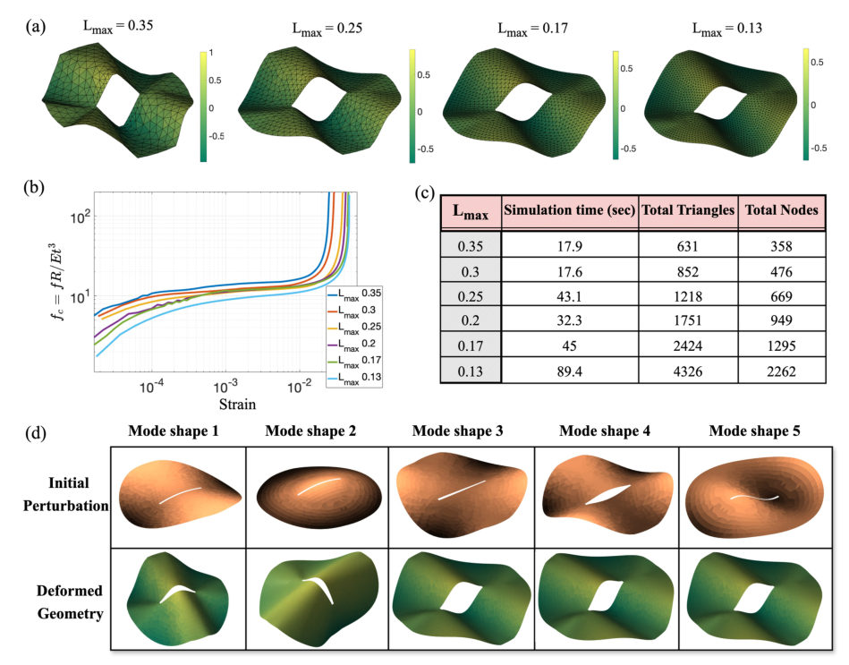
<figcaption class="paper-figure-caption"><b>Fig 4.</b> Figure 4: Effect of mesh size and initial perturbation on the deformed shapes and stiffness of kirigami. (a) Mesh size effect on the deformed shape of the kirigami. 𝐿𝑚𝑎𝑥is the mesh control parameter that defines maximum allowable length. (b) Force-displacement plot for six different mesh size. We observe a convergence in deformed shape and stiffness after a certain mesh size. (c) computational time and total elements details for six different mesh sizes. (d) Effect of initial geometry/perturbation on the deformed shape. Initial geometry is only perturbed in z-direction with maximum of 10−2</figcaption>
</figure>
<figure class="paper-figure-card">
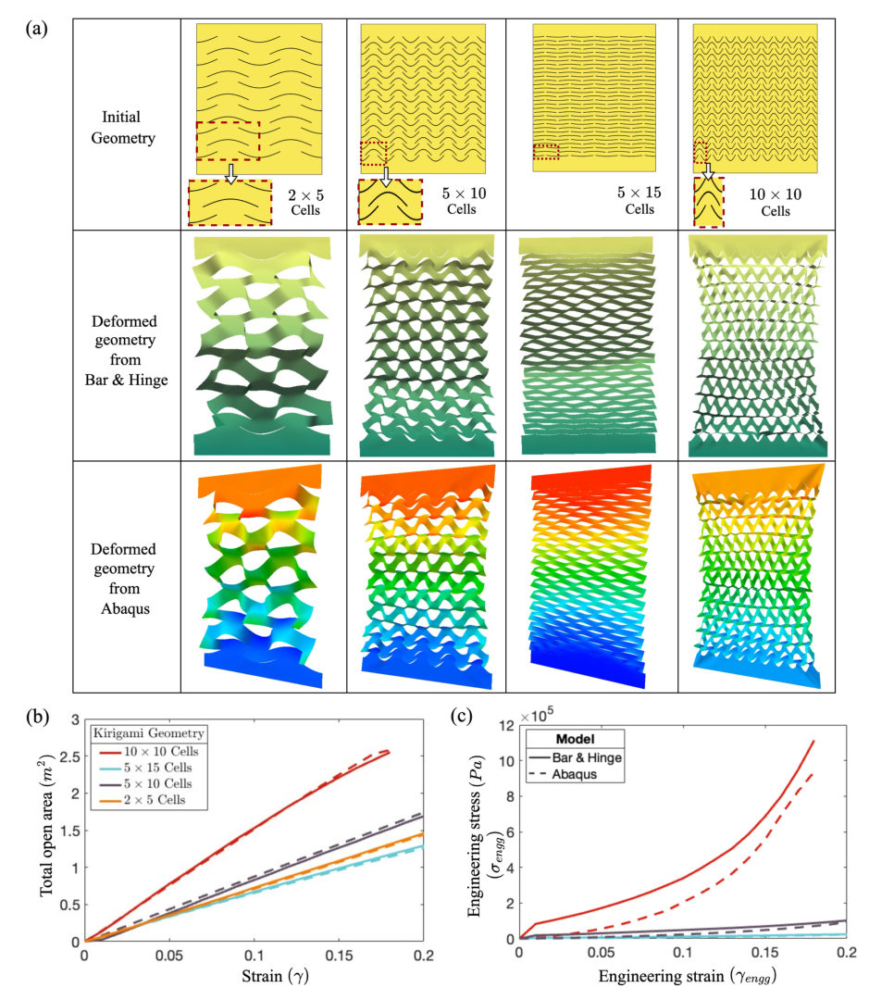
<figcaption class="paper-figure-caption"><b>Fig 5.</b> Figure 5: The deformed shapes and stiffness comparison between the bar and hinge model and the shell-element Abaqus model. (a) Initial and deformed geometries of four different cellular structures. Unit cells are indicated by red dashed lines. (b) Total open area versus strain for the structures shown above. (c) Reaction force versus strain for the same structures. Dashed and solid lines represent the Abaqus and bar and hinge models, respectively. Colors represent different number of cells.</figcaption>
</figure>
</div>

<p><strong>Summary.</strong> This paper introduces a generalized, computationally efficient reduced-order model for analyzing kirigami structures using a bar and hinge approach. This method significantly outperforms conventional Finite Element simulations by achieving massive speedups while maintaining high accuracy in predicting large deformations. It provides a powerful tool for rapid design exploration of reconfigurable mechanical systems.</p>
<p><strong>Why it may be interesting.</strong> While focused on mechanical engineering, the development of highly efficient, physics-informed reduced-order models (ROMs) is a core concept in computational physics applicable to simulating complex quantum many-body dynamics or open quantum systems where full diagonalization is intractable.</p>
<details>
<summary>Detailed structure</summary>
<p><strong>Main problem.</strong> To develop a computationally efficient, generalizable, and robust simulation framework for analyzing kirigami structures, overcoming the limitations of standard Finite Element (FE) methods.</p>
<p><strong>Main result.</strong> The proposed model achieves less than 5% difference in deformation predictions compared to FE analysis while providing at least a tenfold computational speedup.</p>
<p><strong>Method.</strong> A reduced-order model based on the bar and hinge approach is used, representing the structure with truss bars for stretching, bending hinges for out-of-plane bending, and torsional springs for rotational resistance.</p>
<p><strong>Model / system.</strong> The system analyzed is kirigami structures—sheets cut precisely to create transformable 2D/3D configurations. The model discretizes this into elements representing axial stiffness (bars), bending resistance (hinges), and in-plane rotation (torsional springs).</p>
<p><strong>Key observables.</strong> Deformation predictions, internal forces, global deformation modes, and stiffness.</p>
<p><strong>Important parameters / regimes.</strong> Stiffness expressions derived for stretching/out-of-plane bending and pure in-plane stretching/rotation regimes.</p>
<p><strong>Assumptions / limitations.</strong> The model assumes that the structure can be accurately represented by discrete bars and hinges; it may overestimate shear stiffness and cannot capture highly localized stress concentrations near vertices.</p>
<p><strong>Figures summary.</strong> Figure 1 illustrates the bar and hinge model representation for both 3D (bars=black, hinges=thick gray) and 2D (bars=black, torsional springs=red dot) analyses. Figure 2 details element definitions like cross-sections and discretized structures.</p>
<p><strong>Paper structure.</strong> The paper introduces the problem gap between FE methods and simple analytical models, proposes the generalized bar/hinge reduced-order model, derives necessary stiffness expressions for different deformation types, validates the model against FE analysis and experiments, and demonstrates its application to complex scenarios like crawlers.</p>
</details>
<details>
<summary>Abstract</summary>
<p>Kirigami, the art of cutting sheets, offers unique characteristics such as shape morphing, stretchability, and adaptability, with applications in deployable and reconfigurable structures. While Finite Element (FE) approaches are widely used to analyze kirigami structures, they are computationally intensive and prone to convergence issues. On the other hand, existing simplified and theoretical models for evaluating kirigami are typically restricted to specific designs and analytical scenarios. This paper proposes a generalized, computationally efficient reduced-order model based on the bar and hinge approach for analyzing any kirigami system. The model represents the entire kirigami structure using truss bars, bending hinges, and torsional springs, capturing both the deformation and internal forces of the system. We derive stiffness expressions for kirigami structures that experience stretching and out-of-plane bending deformations, as well as for structures that experience only in-plane stretching and rotations. The accuracy and robustness of the model are validated through comparisons with FE analysis and experimental data on both single-cut kirigami designs and more complex designs with multiple cuts. Our results demonstrate less than 5% difference in deformation predictions and achieve at least a tenfold computational speedup compared to FE simulations. Additionally, we demonstrate the model's capabilities through simulating complex scenarios, including kirigami-skinned crawlers, high-throughput property-space exploration, and in-plane kirigami-inspired metamaterials. These examples demonstrate computational capabilities that enable large-deformation structural simulations and high-throughput design exploration beyond the practical limits of conventional FE methods.</p>
</details>
<p><sub><a href="#top">↑ back to top</a></sub></p>

<p><a id="paper-2608.14124"></a></p>
<h3 id="adiabatic-perturbation-theory-for-the-math935math-spinor-nonlinear-schrodinger-equation-with-nonvanishing-boundary-conditions"><a href="http://arxiv.org/abs/2608.14124v1">Adiabatic perturbation theory for the $F=1$ spinor nonlinear Schrödinger equation with nonvanishing boundary conditions</a></h3>
<p><strong>Authors:</strong> Vassilios M Rothos<br>
<strong>Type:</strong> theory · <strong>Category:</strong> quantum gases · <strong>PDF:</strong> <a href="https://arxiv.org/pdf/2608.14124v1">https://arxiv.org/pdf/2608.14124v1</a><br>
<strong>Analysis basis:</strong> full PDF text, analyzed in chunks
<strong>Topic relevance:</strong> <code>analog quantum simulation</code> <strong>2/5</strong> · <code>driven-dissipative phase transition</code> <strong>2/5</strong> · <code>Keldysh / 2PI / non-Gaussian methods</code> <strong>1/5</strong> · <code>correlated / nonlocal dissipation</code> <strong>1/5</strong> · <code>methods for driven-dissipative</code> <strong>1/5</strong> · <code>non-equilibrium universality</code> <strong>1/5</strong> · <code>scars &amp; prethermalization</code> <strong>1/5</strong></p>
<div class="figure-strip-hint">↔ Scroll figures horizontally</div>
<div class="paper-figures-scroll">
<figure class="paper-figure-card">
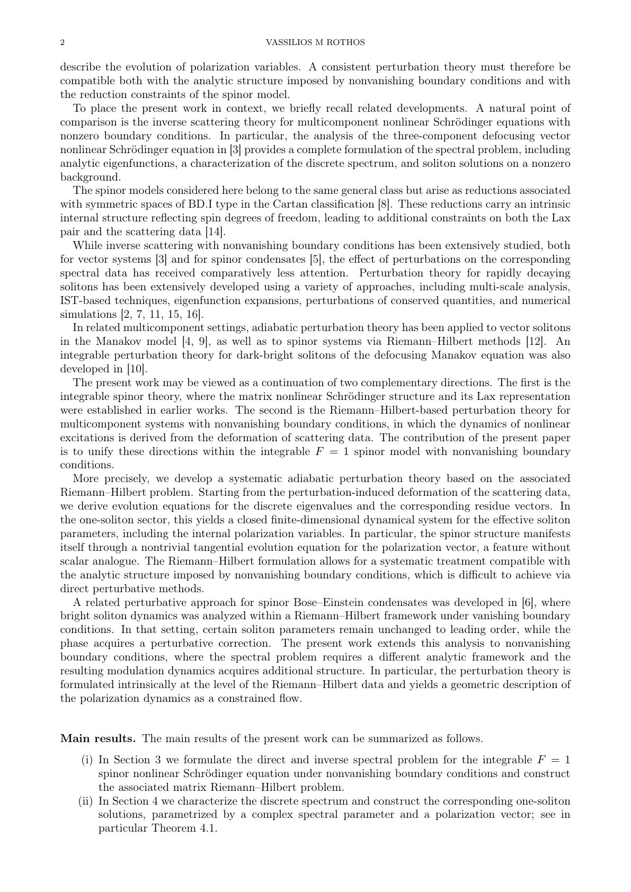
<figcaption class="paper-figure-caption"><b>Fig 1.</b> Low-resolution page preview, page 2</figcaption>
</figure>
<figure class="paper-figure-card">
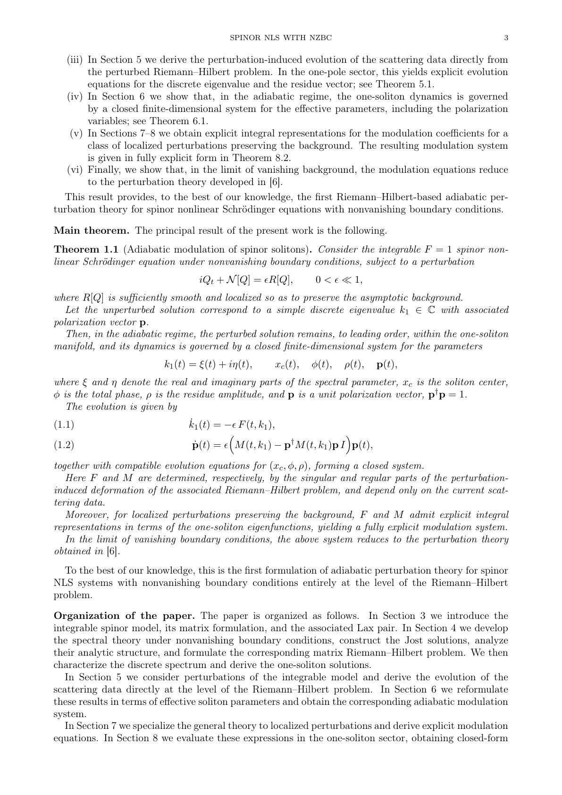
<figcaption class="paper-figure-caption"><b>Fig 2.</b> Low-resolution page preview, page 3</figcaption>
</figure>
<figure class="paper-figure-card">
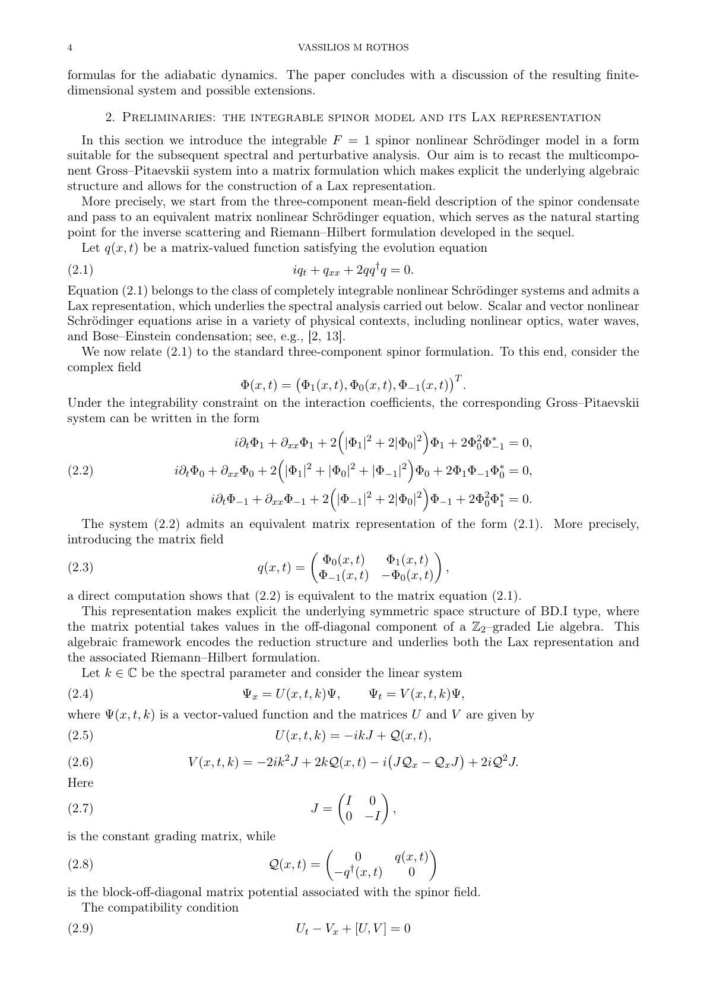
<figcaption class="paper-figure-caption"><b>Fig 3.</b> Low-resolution page preview, page 4</figcaption>
</figure>
<figure class="paper-figure-card">
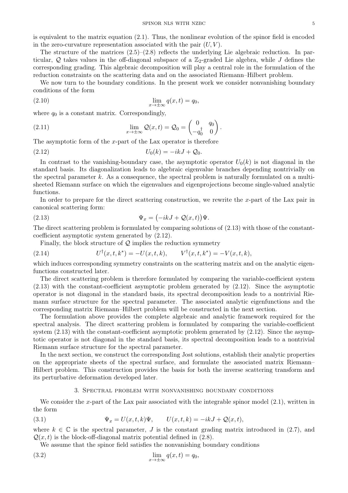
<figcaption class="paper-figure-caption"><b>Fig 4.</b> Low-resolution page preview, page 5</figcaption>
</figure>
<figure class="paper-figure-card">
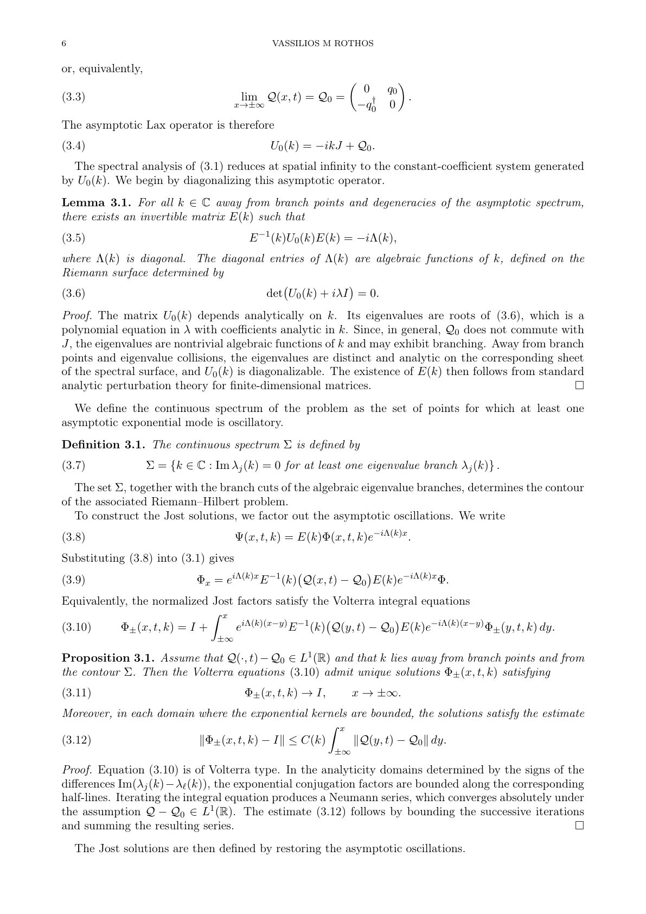
<figcaption class="paper-figure-caption"><b>Fig 5.</b> Low-resolution page preview, page 6</figcaption>
</figure>
</div>

<p><strong>Summary.</strong> This paper develops an advanced adiabatic perturbation theory for the $F=1$ spinor NLS equation under nonvanishing boundary conditions. It reformulates the problem using the Riemann-Hilbert method to derive a closed set of differential equations governing the slow evolution of soliton parameters. This provides a fully computable description of how localized spin excitations evolve when subjected to small perturbations in systems like Bose-Einstein condensates.</p>
<p><strong>Why it may be interesting.</strong> This work provides a rigorous mathematical framework (RHP-based adiabatic theory) to study the stability and slow dynamics of nonlinear excitations in spinor BECs, which is crucial for understanding spin mixing and coherence evolution.</p>
<details>
<summary>Detailed structure</summary>
<p><strong>Main problem.</strong> To develop a systematic adiabatic perturbation theory for the $F=1$ spinor nonlinear Schrödinger equation under nonvanishing boundary conditions.</p>
<p><strong>Main result.</strong> The slow evolution of localized soliton parameters is governed by a closed, finite-dimensional dynamical system derived entirely from the Riemann-Hilbert problem formulation.</p>
<p><strong>Method.</strong> The analysis uses adiabatic perturbation theory applied to the spectral problem associated with the NLS equation, formulated within the framework of the Riemann-Hilbert problem (RHP).</p>
<p><strong>Model / system.</strong> The model is the integrable $F=1$ spinor nonlinear Schrödinger (NLS) equation, which describes nonlinear wave propagation coupled to internal spin degrees of freedom, relevant for Bose-Einstein condensates.</p>
<p><strong>Key observables.</strong> Effective soliton parameters including spectral variables ($\xi, \eta$), center ($x_c$), phase ($\phi$), amplitude ($
ho$), and the polarization vector ($\mathbf{p}$).</p>
<p><strong>Important parameters / regimes.</strong> Small perturbation strength ($\epsilon$), nonvanishing boundary conditions (NZBC), and the one-soliton sector approximation.</p>
<p><strong>Assumptions / limitations.</strong> The perturbations are assumed to be small, localized, and preserve the asymptotic background state; the analysis is detailed in the one-soliton adiabatic regime.</p>
<p><strong>Paper structure.</strong> The paper builds from reformulating the problem into an RHP framework for NZBCs, deriving the evolution of scattering data at the RHP level, and finally reducing this to explicit modulation equations governing soliton parameters via weighted overlap integrals.</p>
</details>
<details>
<summary>Abstract</summary>
<p>We develop a systematic adiabatic perturbation theory for the integrable $F=1$ spinor nonlinear Schrödinger equation under nonvanishing boundary conditions, formulated entirely within the framework of the associated Riemann--Hilbert problem. In this setting, localized nonlinear excitations are characterized by discrete spectral data consisting of a complex eigenvalue and an associated polarization vector. For a general class of small perturbations preserving the background, we derive the perturbation-induced evolution of the scattering data directly at the level of the Riemann--Hilbert problem. In the one-soliton sector, this yields a closed finite-dimensional dynamical system governing the slow evolution of the effective soliton parameters, including the spectral variables, the soliton center and phase, the residue amplitude, and the internal polarization state. The latter evolves according to a constrained dynamical equation with no scalar analogue. For localized perturbations, the modulation equations are expressed in explicit integral form in terms of the one-soliton eigenfunctions, providing a fully computable description of the dynamics. In the limit of vanishing boundary conditions, the resulting system reduces to the perturbation theory obtained by E. V. Doktorov, et al, Phys. Rev. A 77 (2008), no. 4, 043617.</p>
</details>
<p><sub><a href="#top">↑ back to top</a></sub></p>

<p><a id="paper-2608.13699"></a></p>
<h3 id="complete-suppression-of-thermomagnetic-instabilities-in-nb-superconducting-films-by-combined-metallic-layers-and-ion-irradiation"><a href="http://arxiv.org/abs/2608.13699v1">Complete Suppression of Thermomagnetic Instabilities in Nb Superconducting Films by Combined Metallic Layers and Ion Irradiation</a></h3>
<p><strong>Authors:</strong> D. Carmo, A. M. H. de Andrade, R. Giulian, A. A. M. Oliveira, W. A. Ortiz, F. Colauto<br>
<strong>Type:</strong> experiment · <strong>Category:</strong> other · <strong>PDF:</strong> <a href="https://arxiv.org/pdf/2608.13699v1">https://arxiv.org/pdf/2608.13699v1</a><br>
<strong>Analysis basis:</strong> full PDF text, analyzed in chunks
<strong>Topic relevance:</strong> <code>driven-dissipative phase transition</code> <strong>2/5</strong> · <code>non-equilibrium universality</code> <strong>2/5</strong> · <code>analog quantum simulation</code> <strong>1/5</strong> · <code>correlated / nonlocal dissipation</code> <strong>1/5</strong> · <code>quantum measurements</code> <strong>1/5</strong> · <code>scars &amp; prethermalization</code> <strong>1/5</strong></p>
<div class="figure-strip-hint">↔ Scroll figures horizontally</div>
<div class="paper-figures-scroll">
<figure class="paper-figure-card">

<figcaption class="paper-figure-caption"><b>Fig 1.</b> FIG. 2. Temperature dependence of the real part of the ac magnetic moment for the pristine Nb-2.5 film and the corre- sponding Ar+-irradiated samples at different fluences. Inset: superconducting transition temperature as a function of ion fluence, obtained from the main-panel data.</figcaption>
</figure>
<figure class="paper-figure-card">
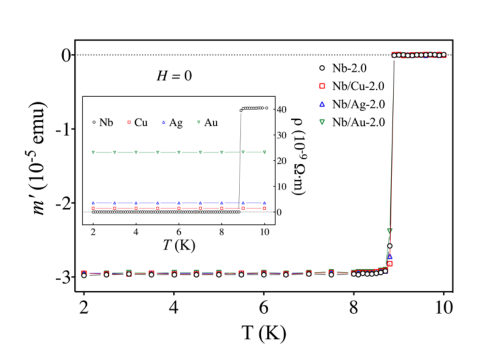
<figcaption class="paper-figure-caption"><b>Fig 2.</b> FIG. 1. Temperature dependence of the real part of the ac magnetic moment for the uncovered Nb-2.0 film and the cor- responding samples with Cu, Ag, and Au overlayers. Inset: electrical resistivity as a function of temperature for the Nb film and for the metallic layers deposited on Si substrates.</figcaption>
</figure>
<figure class="paper-figure-card">
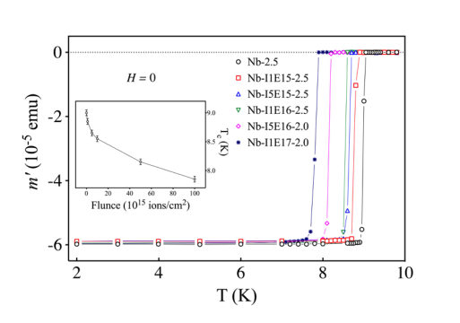
<figcaption class="paper-figure-caption"><b>Fig 3.</b> Figure 3 shows top-view SEM images of the pristine and Ar+-irradiated Nb-2.5 films. The pristine sample, Fig. 3(a), exhibits a continuous and homogeneous sur- face with a fine granular morphology, characteristic of a well-coalesced polycrystalline Nb film. The grains have a typical lateral size in the range of 50 to 100 nm. After ir- radiation at a fluence of 1×1015 ions/cm2, Fig. 3(b), the surface morphology remains very similar to that of the pristine film, indicating that the continuity of the film is preserved and that only minor surface modifications are introduced at this fluence. As the fluence increases to 5 × 1015 and 1 × 1016 ions/cm2, Figs. 3(c) and 3(d), the surface texture...</figcaption>
</figure>
<figure class="paper-figure-card">
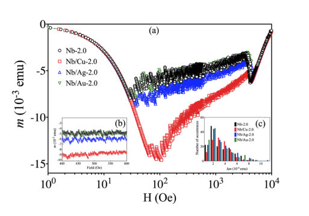
<figcaption class="paper-figure-caption"><b>Fig 4.</b> FIG. 4. Magnetic moment as a function of applied mag- netic field for the Nb-2.0 film and the corresponding samples coated with Cu, Ag, and Au, measured after zero-field cool- ing to 3.0 K. Panel (a) is plotted on a logarithmic field scale to accommodate the magnetization over a broad field range. Panel (b) shows an enlarged view of the field interval used for the statistical analysis of the magnetization jumps shown in panel (c).</figcaption>
</figure>
<figure class="paper-figure-card">
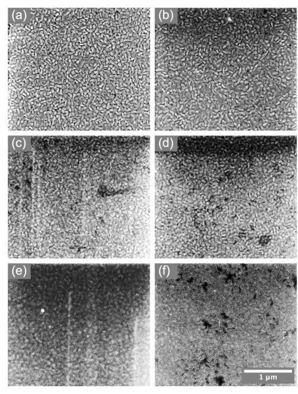
<figcaption class="paper-figure-caption"><b>Fig 5.</b> FIG. 3. Top-view SEM images of the pristine Nb film and the corresponding Ar+-irradiated films: (a) Nb-2.5, (b) Nb- I1E15-2.5, (c) Nb-I5E15-2.5, (d) Nb-I1E16-2.5, (e) Nb-I5E16- 2.5, and (f) Nb-I1E17-2.5.</figcaption>
</figure>
</div>

<p><strong>Summary.</strong> This work investigates methods to stabilize superconducting Nb thin films against destructive thermomagnetic instabilities caused by flux avalanches. By combining the addition of normal-metal overlayers with controlled Ar ion irradiation, the researchers achieved complete suppression of these instabilities. This provides a practical engineering route for improving the reliability of superconducting devices.</p>
<p><strong>Why it may be interesting.</strong> While focused on classical superconductivity phenomena, the study involves non-equilibrium dynamics (flux avalanches) and material modification techniques (irradiation/coating) that are relevant to understanding energy dissipation and stability in quantum systems near phase transitions.</p>
<details>
<summary>Detailed structure</summary>
<p><strong>Main problem.</strong> The study addresses thermomagnetic instabilities, which manifest as flux avalanches in superconducting films, leading to performance degradation in superconducting devices.</p>
<p><strong>Main result.</strong> Combining normal-metal overlayers (like Cu) and Ar ion irradiation leads to the complete suppression of these detrimental thermomagnetic instabilities, restoring stable critical-state behavior.</p>
<p><strong>Method.</strong> The researchers used magnetization measurements, magneto-optical imaging, and electrical resistivity tests on modified Nb thin films to diagnose and quantify instability suppression.</p>
<p><strong>Model / system.</strong> The physical system is Niobium (Nb) superconducting thin films deposited on substrates. The modifications involve coating with normal metals ($ ext{Cu}$, $ ext{Ag}$, $ ext{Au}$) or subjecting the film to controlled Ar ion irradiation.</p>
<p><strong>Key observables.</strong> Magnetization curves ($M$ vs $H$), magneto-optical images showing flux penetration patterns, and the stability region mapped in an $H$-$T$ diagram.</p>
<p><strong>Important parameters / regimes.</strong> Ion fluence (e.g., $5	imes10^{16} 	ext{ ions/cm}^2$), thickness of metallic layers ($\sim 1 \mu	ext{m}$), and applied magnetic field strength ($H$).</p>
<p><strong>Assumptions / limitations.</strong> The stabilization mechanism is attributed to a combination of enhanced thermal conductivity (heat sinking) from the metal layer and electromagnetic braking effects.</p>
<p><strong>Figures summary.</strong> Figures show magnetization curves comparing pristine, coated, irradiated, and combined samples, demonstrating smooth vs. abrupt flux jumps; MOI panels illustrate the transition from dendritic avalanches to uniform flux penetration upon combined treatment.</p>
<p><strong>Paper structure.</strong> The paper systematically investigates stabilization using metallic coatings first (showing partial suppression), then ion irradiation alone (reducing high-field instability), culminating in the combination of both treatments, which achieves full suppression.</p>
</details>
<details>
<summary>Abstract</summary>
<p>Thermomagnetic instabilities in superconducting films can trigger flux avalanches that disrupt the critical state and impair the performance of superconducting devices. Here we investigate the stabilization of Nb thin films subjected to a perpendicular magnetic field by two complementary approaches: the addition of normal-metal overlayers and Ar ion irradiation. Magnetization measurements and magneto-optical imaging show that the metallic layers suppress the onset of avalanches at low applied fields, whereas ion irradiation reduces the high-field portion of the instability region by shifting the upper threshold for avalanche activity to lower fields. When combined in the same sample, these two partial stabilization effects lead to complete suppression of thermomagnetic instabilities. In particular, a Nb film coated with a 1~\(μ\)m-thick Cu layer after irradiation at a fluence of \(5\times10^{16}\)~ions/cm\(^2\) exhibits smooth magnetization curves and avalanche-free flux penetration. This combined treatment restores stable critical-state behavior and provides a practical route for stabilizing Nb superconducting films in thin-film superconducting technologies.</p>
</details>
<p><sub><a href="#top">↑ back to top</a></sub></p>

<p><a id="paper-2608.13821"></a></p>
<h3 id="classification-of-intracellular-protein-patterns-from-reactive-equilibria"><a href="http://arxiv.org/abs/2608.13821v1">Classification of Intracellular Protein Patterns from Reactive Equilibria</a></h3>
<p><strong>Authors:</strong> Henrik Weyer, Ching Yee Leung, Erwin Frey<br>
<strong>Type:</strong> theory · <strong>Category:</strong> statistical mechanics · <strong>PDF:</strong> <a href="https://arxiv.org/pdf/2608.13821v1">https://arxiv.org/pdf/2608.13821v1</a><br>
<strong>Analysis basis:</strong> full PDF text, analyzed in chunks
<strong>Topic relevance:</strong> <code>driven-dissipative phase transition</code> <strong>2/5</strong> · <code>Keldysh / 2PI / non-Gaussian methods</code> <strong>1/5</strong> · <code>analog quantum simulation</code> <strong>1/5</strong> · <code>correlated / nonlocal dissipation</code> <strong>1/5</strong> · <code>methods for driven-dissipative</code> <strong>1/5</strong> · <code>non-equilibrium universality</code> <strong>1/5</strong></p>
<div class="figure-strip-hint">↔ Scroll figures horizontally</div>
<div class="paper-figures-scroll">
<figure class="paper-figure-card">
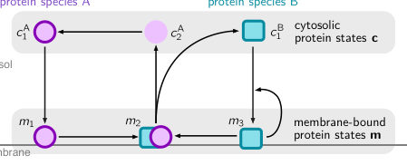
<figcaption class="paper-figure-caption"><b>Fig 1.</b> FIG. 1. Schematic of a two-species membrane–cytosol re- action network exemplifying the multi-component systems considered in this work. Species A (left, magenta circles) and species B (right, cyan squares) each comprise membrane- bound states m (top, shaded region) and cytosolic states c (bottom). Vertical arrows indicate attachment to and detach- ment from the membrane; horizontal arrows indicate inter- conversion among membrane-bound states (m1 ↔m2 ↔m3) and among cytosolic states (e.g., cA 2 →cA 1 ). For each species, a single cytosolic state (cA 1 , cB 1 ) is binding-competent, i.e., capable of attaching to the membrane; all other cytosolic states are binding-incompetent. The...</figcaption>
</figure>
<figure class="paper-figure-card">
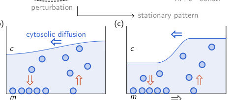
<figcaption class="paper-figure-caption"><b>Fig 2.</b> FIG. 2. Illustration of the mass-redistribution instabil- ity in two-component mass-conserving reaction-diffusion sys- tems; redrawn from Ref. [23]. (a) The homogeneous steady state has uniform cytosolic density c(x, t) and membrane den- sity m(x, t). We consider a small perturbation that increases the membrane density on the left side of the system and re- duces it on the right side. (b) If the reactive equilibrium between attachment and detachment shifts in favor of attach- ment with an increased total density of the proteins, the cy- tosolic density decreases on the left and increases on the right (red vertical arrows). The resulting gradient in the cytosolic density redistributes...</figcaption>
</figure>
<figure class="paper-figure-card">
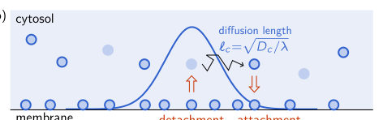
<figcaption class="paper-figure-caption"><b>Fig 3.</b> FIG. 3. Illustration of a minimal McRD system with one species and two cytosolic components. (a) We consider a single protein species with two cytosolic states: a binding- competent state c1 (blue with outline) and a non-binding (purely cytosolic) state c2 (blue without outline). (b) Af- ter detaching (upward arrow), proteins enter the non-binding cytosolic state and diffuse (black, zigzag arrow) until they re- gain binding competence at rate λ; the typical distance cov- ered before reactivation is ℓc = p</figcaption>
</figure>
<figure class="paper-figure-card">
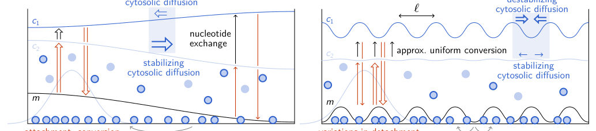
<figcaption class="paper-figure-caption"><b>Fig 4.</b> FIG. 4. Long- and short-wavelength instabilities of the three-component McRD model introduced in Fig. 3. In both panels, the lower black curve shows the membrane profile m, and the upper two curves show the cytosolic profiles c1 (binding-competent, dark blue) and c2 (non-binding, light blue); arrows indicate attachment (upward), detachment (downward), and conversion (c2 →c1, black thin). The length scale of diffusive averaging in the c2 component is indicated by the light blue diffusion kernel shown in the background of the attachment and detachment arrows. (a) In the long-wavelength limit (qℓc ≪1), the spatial separation between detachment and attachment is negligible. Attachment,...</figcaption>
</figure>
<figure class="paper-figure-card">
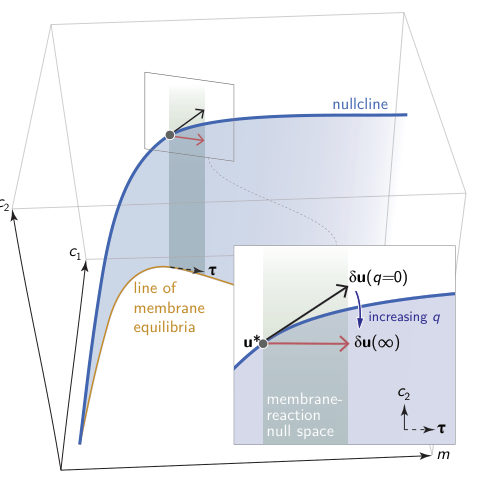
<figcaption class="paper-figure-caption"><b>Fig 5.</b> FIG. 5. Geometric interpretation of marginal stability in the (m, c1, c2) phase space. The nullcline u∗(ρ) (thick solid curve, blue) projects onto the (m, c1)–plane as the line of membrane equilibria Rm(m, c1) = 0 (blue-shaded manifold and thin solid curve, orange), with projected tangent τ (dashed arrow). The null space of the membrane-reaction Jacobian is shown as the shaded plane (dark green shading). Inset: vicinity of the homogeneous steady state u∗(gray dot). For q →0, the marginal eigenvector δu(q =0) is tangent to the nullcline (black arrow); for q →∞, the c2–component is suppressed and δu(q =∞) lies in a plane parallel to the (m, c1)–plane (red horizontal arrow).</figcaption>
</figure>
</div>

<p><strong>Summary.</strong> This paper introduces a novel geometric classification method to predict pattern formation instabilities in complex biochemical reaction-diffusion systems. By exploiting mass conservation laws, it reduces the stability analysis from an intractable high-dimensional kinetic space to a manageable subspace defined by conserved species. This provides a robust and experimentally accessible framework for understanding self-organized patterns in cell biology.</p>
<p><strong>Why it may be interesting.</strong> While focused on classical chemical kinetics, the mathematical machinery of dimensionality reduction using conservation laws echoes concepts used in analyzing effective Hamiltonians or reduced descriptions in open quantum systems where constraints simplify the state space.</p>
<details>
<summary>Detailed structure</summary>
<p><strong>Main problem.</strong> The primary challenge is locating instabilities (onset of pattern formation) in complex, multi-component reaction-diffusion networks without relying on fully constrained kinetic knowledge.</p>
<p><strong>Main result.</strong> The authors develop a geometric classification that predicts pattern-forming instabilities by reducing the stability analysis from the full component space to the lower-dimensional space spanned by conserved species.</p>
<p><strong>Method.</strong> They employ a geometric approach based on analyzing 'slope matrices' derived from the reactive-equilibrium manifold, treating pattern formation as a mass-redistribution instability.</p>
<p><strong>Model / system.</strong> The study focuses on intracellular protein patterns governed by mass-conserving reaction-diffusion (McRD) networks, coupling bulk cytosolic dynamics with membrane reactions. Examples include the E. coli Min system and C. elegans polarity mechanisms.</p>
<p><strong>Key observables.</strong> Slope matrices describing changes in equilibrium cytosolic densities; pattern formation itself is diagnosed as a 'mass-redistribution instability'.</p>
<p><strong>Important parameters / regimes.</strong> The analysis depends on mass conservation laws, the structure of reaction kinetics, and the separation between membrane-bound and cytosolic components.</p>
<p><strong>Assumptions / limitations.</strong> Key assumptions include exploiting the mass-conserving nature of protein reactions, confining nonlinear feedback to membranes, and using a thin layer approximation for mixed-dimensional dynamics.</p>
<p><strong>Paper structure.</strong> The paper builds from identifying the difficulty in standard stability analysis (LSA) to proposing a geometric classification. It details how mass conservation reduces the problem space to conserved species, develops criteria based on nullcline slopes, and applies this framework to known biological systems.</p>
</details>
<details>
<summary>Abstract</summary>
<p>Self-organized spatial patterns are central to nonequilibrium physics and cell biology, yet locating instabilities in multi-component, reaction-diffusion networks remains challenging because standard eigenvalue analyses scale with the number of biochemical states and rely on reaction kinetics often poorly constrained by experiments. Exploiting the common mass-conserving structure of protein reaction kinetics and the fact that nonlinear feedback is typically confined to membrane reactions while lateral membrane diffusion is negligible, we develop a geometric classification that predicts stationary, and approximately also oscillatory, pattern-forming instabilities from reactive equilibria. The developed criteria reduce the stability analysis from the full component space to the space of conserved species. On this reduced space, slope matrices---describing the change of equilibrium cytosolic densities with respect to total species densities---govern onset. Based on densities in chemical equilibrium, this approach eliminates the requirement of comprehensive kinetic knowledge frequently lacking in experimental systems. Thus, a broad range of instabilities can be understood as mass-redistribution instabilities---self-amplifying mass redistribution caused by shifting local equilibria. We apply these criteria to models for the Escherichia coli Min system and the Caenorhabditis elegans polarity system and show that the reduction extends to the mixed-dimensional dynamics in systems coupling bulk cytosolic dynamics with membrane dynamics on the boundary. Together, these results provide an interpretable, broadly applicable, and experimentally accessible framework for diagnosing and designing pattern formation in multicomponent nonequilibrium systems on the basis of conservation laws.</p>
</details>
<p><sub><a href="#top">↑ back to top</a></sub></p>

<p><a id="paper-2608.14384"></a></p>
<h3 id="large-lumps"><a href="http://arxiv.org/abs/2608.14384v1">Large lumps</a></h3>
<p><strong>Authors:</strong> D. Bazeia, I. Bezerra, M. A. Marques, R. Menezes<br>
<strong>Type:</strong> theory · <strong>Category:</strong> other · <strong>PDF:</strong> <a href="https://arxiv.org/pdf/2608.14384v1">https://arxiv.org/pdf/2608.14384v1</a><br>
<strong>Analysis basis:</strong> full PDF text, analyzed in chunks
<strong>Topic relevance:</strong> <code>analog quantum simulation</code> <strong>2/5</strong> · <code>Frenkel-Kontorova</code> <strong>1/5</strong> · <code>Keldysh / 2PI / non-Gaussian methods</code> <strong>1/5</strong> · <code>correlated / nonlocal dissipation</code> <strong>1/5</strong></p>
<div class="figure-strip-hint">↔ Scroll figures horizontally</div>
<div class="paper-figures-scroll">
<figure class="paper-figure-card">
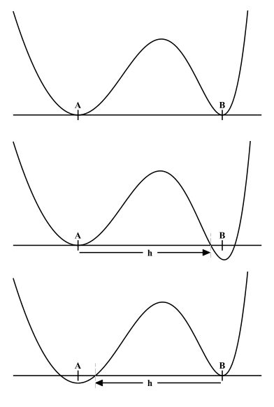
<figcaption class="paper-figure-caption"><b>Fig 1.</b> FIG. 1. A pictorial illustration of the potential Vk(φ) (top), V a l (φ) with the right minimum shifted down (middle) and V a l (φ) with the left minimum shifted down (bottom).</figcaption>
</figure>
<figure class="paper-figure-card">

<figcaption class="paper-figure-caption"><b>Fig 2.</b> FIG. 2. A pictorial illustration of the potential V a l (φ) showing that, as a gets larger, the minimum on the right goes up and the slope of the potential at the zero (return point of φl(x)) decreases.</figcaption>
</figure>
<figure class="paper-figure-card">

<figcaption class="paper-figure-caption"><b>Fig 3.</b> FIG. 3. The solution (15) (left) depicted for a = 0.5, 0.7, 0.9, 1.2, 2, 4, 6, 8 and 10 and the energy density (16) (right), for a = 0.5, 4 and 10. The colors get lighter as a gets larger.</figcaption>
</figure>
<figure class="paper-figure-card">

<figcaption class="paper-figure-caption"><b>Fig 4.</b> FIG. 4. The potential (17) depicted for a = 0.5, 0.7, 0.9, 1.2, 2, 4, 6, 8 and 10. The colors get lighter as a gets larger. The curves for a ≥2 become indistinguishable, appearing as the curve with the lightest color.</figcaption>
</figure>
<figure class="paper-figure-card">

<figcaption class="paper-figure-caption"><b>Fig 5.</b> FIG. 5. The potential (21) depicted for a = 0.5, 0.7, 0.9, 1.2, 2, 4, 6, 8 and 10. The shades of green follow the previous figures. For a ≥2, the lines become indis- tinguishable, appearing as the curve with the lightest color, which approaches Vk(φ) = (1 −φ2)2/2.</figcaption>
</figure>
</div>

<p><strong>Summary.</strong> This paper introduces a rigorous mathematical procedure to generate 'large lump' solutions by superimposing kink and anti-kink pairs in scalar field theories. The method allows for the construction of novel localized energy configurations, demonstrating how these lumps inherit asymptotic properties from their parent kinks. It is significant because it provides both constructive techniques and diagnostic tools to test the limits of this superposition approach.</p>
<p><strong>Why it may be interesting.</strong> While focused on classical field theory solitons rather than quantum systems directly, the study of stable/unstable localized structures (lumps) and their stability analysis using linear perturbation theory is highly relevant to understanding topological defects in condensed matter or Bose-Einstein condensate dynamics.</p>
<details>
<summary>Detailed structure</summary>
<p><strong>Main problem.</strong> The research develops a systematic procedure to construct 'large lump' solutions in scalar field theories by analyzing the superposition of kink-antikink pairs.</p>
<p><strong>Main result.</strong> The method successfully generates novel lump solutions, including a previously unobtained 'vacuumless lump,' and provides diagnostic tests to verify if an arbitrary lump profile can be generated this way.</p>
<p><strong>Method.</strong> Lump solutions are constructed by superimposing shifted kink ($\phi_k(x+a)$) and anti-kink ($\phi_{ak}(x-a)$) profiles, which allows for the investigation of asymptotic decay rates (exponential vs. power-law).</p>
<p><strong>Model / system.</strong> The study focuses on classical field theories described by a Lagrangian density involving a potential $V(\phi)$, particularly those supporting topological kink solutions in $(1+1)$ dimensions.</p>
<p><strong>Key observables.</strong> Lump energy density ($
ho(x)$), total energy ($E$), and the asymptotic decay profile of the solution tails.</p>
<p><strong>Important parameters / regimes.</strong> The separation distance parameter $a$, which controls the width of the lump plateau, and the parameters defining the parent kink solutions.</p>
<p><strong>Assumptions / limitations.</strong> The primary assumption is that lumps can be constructed via the superposition principle; however, the authors test this by finding cases where it fails for an arbitrary solution.</p>
<p><strong>Figures summary.</strong> Figures illustrate potential energy landscapes ($V(\phi)$) showing minimum shifts due to parameter $a$, and display the resulting lump solutions $\varphi_l(x)$ and their localized energy densities $
ho_l(x)$ as $a$ increases.</p>
<p><strong>Paper structure.</strong> The paper proceeds by defining the physical context (kinks vs. lumps), establishing the superposition method using a separation parameter $a$, applying this to known models ($\phi^4$, sine-Gordon), and concluding with advanced tests for general lump construction, including vacuumless cases.</p>
</details>
<details>
<summary>Abstract</summary>
<p>We introduce a procedure to obtain lump solutions via the formation of a kink-antikink pair, consisting of the superposition of kinks whose distance from the origin is controlled by a single parameter $a$. For large values of $a$, a wide plateau appears in the solution, which we call a large lump. The procedure involves the use of a first-order equation that allows the construction of the potential associated with the lump solution. We then investigate several known scalar field models where the parent kinks are capable of giving rise to novel lumps. The lump inherits the tails of the parent kink, allowing for either short-range exponential profiles or long-range profiles characterized by distinct power-law decays. We also show how to verify if an arbitrary lump solution can be obtained via our method and illustrate this possibility with a novel vacuumless lump.</p>
</details>
<p><sub><a href="#top">↑ back to top</a></sub></p>

<p><a id="paper-2608.14158"></a></p>
<h3 id="simplified-silicon-nitride-nanomembrane-circuits-for-van-der-waals-integration"><a href="http://arxiv.org/abs/2608.14158v1">Simplified Silicon Nitride Nanomembrane Circuits for van der Waals Integration</a></h3>
<p><strong>Authors:</strong> Tommaso Confalone, Vasilisa Gerega, Flavia Lo Sardo, Shreya Kumbhakar, Davide Massarotti, Francesco Tafuri, Shigeyuki Ishida, Hiroshi Eisaki, Kornelius Nielsch, Golam Haider, Nicola Poccia<br>
<strong>Type:</strong> experiment · <strong>Category:</strong> strongly correlated electrons · <strong>PDF:</strong> <a href="https://arxiv.org/pdf/2608.14158v1">https://arxiv.org/pdf/2608.14158v1</a><br>
<strong>Analysis basis:</strong> full PDF text, analyzed in chunks
<strong>Topic relevance:</strong> <code>QC/QI experiment</code> <strong>1/5</strong></p>
<div class="figure-strip-hint">↔ Scroll figures horizontally</div>
<div class="paper-figures-scroll">
<figure class="paper-figure-card">

<figcaption class="paper-figure-caption"><b>Fig 1.</b> FIG. 1: SiNx nanomembrane circuits fabrication process. Top: Schematic cross-sectional illustrations of the fabrication process, showing (I) backside array definition, (II) front-side SiNx etching and metallization, (III) membrane release by KOH etching, and (IV) contact exposure by Ar etching. Bottom: Corresponding optical images for each fabrication step. White scale bars correspond to 100 µm, and red dotted lines indicate the cross-sectional locations shown in the schematics above.</figcaption>
</figure>
<figure class="paper-figure-card">

<figcaption class="paper-figure-caption"><b>Fig 2.</b> FIG. 2: Schematic comparison of the fabrication workflows for the bottom-up and top-down approaches. The process flows are divided into four conceptual categories, with the required fabrication tools listed for each category on both sides. MLA = maskless aligner; (D)RIE = (deep) reactive ion etching; SPT = sputtering tool; ALD = atomic layer deposition; XFE = XeF2 etcher; CPD = critical point dryer; PECVD = plasma-enhanced chemical vapor deposition; c.a. LPCVD = commercially available low-pressure chemical vapor deposition.</figcaption>
</figure>
<figure class="paper-figure-card">

<figcaption class="paper-figure-caption"><b>Fig 3.</b> FIG. 3: SEM and AFM characterization of the contact engineering process. (a) SEM images comparing SiNx etching with and without microtrenching. (b) AFM image of the via after optimized SiNx etching. (c) AFM image of a contact after over-etching in KOH, showing holes and surface non-uniformity caused by partial detachment of the Au/Cr layer. (d) AFM image of a contact after Ar etching to remove the Cr layer. The etching conditions were optimized to maintain a surface roughness comparable to that before Cr removal.</figcaption>
</figure>
<figure class="paper-figure-card">

<figcaption class="paper-figure-caption"><b>Fig 4.</b> FIG. 4: Electrical contact integration of a four-unit-cell-thick, optimally doped Bi2201 flake. (a) Optical image of the device. Inset: Magnified view of the flake (red dotted line) and contacts (black dotted lines). (b) Temperature dependence of the resistance, R(T), and its derivative, dR/dT, from 300 K to 3 K. The superconducting transition temperatures defined from the inflection point of R(T), T inf c , and from the onset of zero resistance, T zero c , are indicated.</figcaption>
</figure>
</div>

<p><strong>Summary.</strong> The paper introduces a simplified top-down fabrication technique using Silicon Nitride nanomembranes to create circuits for van der Waals integration. This method successfully allowed the electrical contact and measurement of superconductivity in ultrathin cuprate superconductors ($    ext{Bi2201}$) without damaging the material's intrinsic properties. It provides a versatile, less complex platform for future quantum device prototyping.</p>
<p><strong>Why it may be interesting.</strong> This work directly addresses the physical realization aspect of studying strongly correlated superconductors (cuprates) in novel geometries, which is crucial for understanding their electronic behavior at interfaces.</p>
<details>
<summary>Detailed structure</summary>
<p><strong>Main problem.</strong> The primary challenge is achieving electrical integration of highly sensitive, atomically thin two-dimensional (2D) materials and van der Waals (vdW) heterostructures without damaging their pristine electronic properties.</p>
<p><strong>Main result.</strong> The authors successfully demonstrated that a simplified top-down SiNx nanomembrane circuit platform can electrically integrate superconducting cuprate flakes ($   ext{Bi2201}$), preserving superconductivity ($T_{c} \sim 32 ext{ K}$) close to the bulk material value.</p>
<p><strong>Method.</strong> They developed and utilized a streamlined, top-down nanofabrication process involving backside patterning, frontside metallization, membrane release via KOH etching, and final contact exposure.</p>
<p><strong>Model / system.</strong> The study focuses on integrating superconducting cuprates ($    ext{Bi}<em 2-x>2   ext{Sr}</em>}   ext{La<em 6_delta="6+\delta">x   ext{CuO}</em>_x$ nanomembranes. This platform is designed to connect fragile vdW heterostructures, including potential moiré materials.}$) into circuits built from $    ext{SiN</p>
<p><strong>Key observables.</strong> Superconducting transition temperature ($T_{c}$), measured via resistance $R(T)$, and the preservation of superconductivity after electrical contact.</p>
<p><strong>Important parameters / regimes.</strong> Four-unit-cell thickness ($\sim 9–10 	ext{ nm}$) for the active superconductor; comparison between top-down vs. bottom-up process complexity.</p>
<p><strong>Assumptions / limitations.</strong> The simplified top-down approach is assumed to reduce fabrication complexity and specialized tool requirements compared to previous methods, though interface roughness remains a consideration.</p>
<p><strong>Figures summary.</strong> Figures illustrate the four-step schematic cross-section of the SiNx NMB circuit fabrication process. Other figures compare SEM/AFM characterizations across etching steps (RIE, KOH, Ar plasma) to validate contact quality.</p>
<p><strong>Paper structure.</strong> The paper first establishes the problem of integrating 2D materials. It then details the simplified top-down nanofabrication methodology for SiNx NMB circuits, comparing it favorably against bottom-up methods. Finally, the method is validated by electrically contacting and measuring the superconducting properties of $    ext{Bi2201}$ flakes.</p>
</details>
<details>
<summary>Abstract</summary>
<p>Two-dimensional (2D) materials and van der Waals (vdW) heterostructures provide an exceptional platform for engineering quantum devices, yet realizing their potential requires electrical integration without compromising the pristine properties of atomically thin crystals through conventional nanofabrication. Transferable circuitry addresses this challenge by decoupling circuit fabrication from device assembly, enabling electrical contacting without directly processing the active material. Here, we introduce SiN$_x$ nanomembrane (NMB) circuits realized through a simplified top-down strategy that reduces fabrication complexity, processing steps and specialized tools required by our previous bottom-up approach. As a stringent benchmark of material preservation, we electrically integrate a four-unit-cell-thick, optimally doped Bi$_2$Sr$_{2-x}$La$_x$CuO$_{6+δ}$ (Bi2201) flake and observe a superconducting transition at T$_c^{inf}$~32K, close to the T$_c^{onset}$~34K measured by susceptibility in the parent crystals. The preservation of superconductivity demonstrates electrical integration of fragile layered materials without direct exposure to conventional cleanroom procedures, providing a versatile platform for integrating increasingly complicated vdW heterostructures, moiré materials, and hybrid quantum architectures.</p>
</details>
<p><sub><a href="#top">↑ back to top</a></sub></p>
<h3 id="other-secondary-papers-1">Other secondary papers (1)</h3>
<details>
<summary>Show other secondary papers</summary>

<p><a id="paper-2608.14090"></a></p>
<h3 id="superconductivity-in-strongly-overdoped-cuprates-beyond-the-single-band-model"><a href="http://arxiv.org/abs/2608.14090v1">Superconductivity in strongly overdoped cuprates: beyond the single-band model</a></h3>
<p><strong>Authors:</strong> Ruichao Chen, Linda Sederholm, Yannick Klein, Ludovic Delbes, Benoît Baptiste, Paraskevas Parisiades, Emmanuel Maisonhaute, Davide Delmonte, Edmondo Gilioli, Maarit Karppinen, Ronald I. Smith, David A. Keen, Yann Le Godec, Andrea Gauzzi<br>
<strong>Type:</strong> experiment · <strong>Category:</strong> strongly correlated electrons · <strong>PDF:</strong> <a href="https://arxiv.org/pdf/2608.14090v1">https://arxiv.org/pdf/2608.14090v1</a><br>
<strong>Analysis basis:</strong> full PDF text, analyzed in chunks</p>
<div class="figure-strip-hint">↔ Scroll figures horizontally</div>
<div class="paper-figures-scroll">
<figure class="paper-figure-card">

<figcaption class="paper-figure-caption"><b>Fig 1.</b> FIG. 1. Left: crystal structure of YBa2Cu3O𝑦. Site labels follow Ref. [13]. Right: occupancy of the O4 and O5 sites in the limiting cases 𝑦= 7, i.e. slightly above optimal doping 𝑦∗= 6.9, and 𝑦= 8. In the present work we achieved overdoping levels up to 𝑦= 7.4.</figcaption>
</figure>
<figure class="paper-figure-card">

<figcaption class="paper-figure-caption"><b>Fig 2.</b> FIG. 2. Observed and calculated diffraction profiles of sample N1 (𝑦= 0.33) and their difference. See the refined structure in Table III. The data were collected by Bank 5 of the POLARIS diffractometer (see text). Blue and red ticks mark the Bragg peaks of YBa2Cu3O𝑦 and KCl, respectively. Inset: detail of the (200) and (020) peaks.</figcaption>
</figure>
<figure class="paper-figure-card">

<figcaption class="paper-figure-caption"><b>Fig 3.</b> FIG. 3. Dependence of the 𝑎-, 𝑏- and 𝑐-lattice parameters of the YBa2Cu3O𝑦HPO samples studied in this work on oxygen concen- tration, 𝑦. Broken lines interpolate the data by Okai [6].</figcaption>
</figure>
<figure class="paper-figure-card">

<figcaption class="paper-figure-caption"><b>Fig 4.</b> FIG. 4. Raman shift of the A1𝑔Raman mode of YBa2Cu3O𝑦(see top-left figure) as a function of 𝑦. Open and full squares refer to the underdoped region, 𝑦&lt; 𝑦∗= 6.9 (data taken from Ref. [26]), and to the overdoped (𝑦&gt; 𝑦∗) HPO samples studied in the present work, where 𝑦was determined by structure refinement or estimated from the lattice parameters. Inset: room temperature Raman spectra of three representative samples: optimally doped YBa2Cu3O6.9 (P); sample P submitted to the HP treatment with no oxidizing agent (R); HPO sample N1. Note the main Raman modes of YBa2Cu3O6.9 at 154, 334, 438 and 502 cm−1 (marked by a broken vertical line).</figcaption>
</figure>
<figure class="paper-figure-card">

<figcaption class="paper-figure-caption"><b>Fig 5.</b> FIG. 5. Cu2- and Cu1-O1 bond lengths and Ba position, 𝑓, of YBa2Cu3O𝑦as a function of 𝑦. 𝑓is the distance in reduced lattice units from the O4/O5 plane at 𝑧= 0 to the average position of the Cu2- O2/O3 plane. Open and full symbols refer to underdoped samples (data from Jorgensen et al. [21]) and to the overdoped N1-N4 samples studied in the present work. Error bars are taken from Table I.</figcaption>
</figure>
</div>
<p><strong>Summary.</strong> The authors investigated superconducting cuprates under extreme oxygen over-doping conditions to resolve discrepancies with the standard doping 'dome' theory. By analyzing crystal structures and electronic properties across highly doped YBa2Cu3O_y, they show that $T_c$ remains high despite excessive hole doping. This suggests that superconductivity requires a theoretical framework beyond the simple single-band model.</p>
<p><strong>Why it may be interesting.</strong> This work provides crucial experimental constraints on the doping dependence of high-$T_c$ superconductivity, directly challenging established theoretical models (like the dome scenario) using advanced structural probes.</p>
<details>
<summary>Detailed structure</summary>
<p><strong>Main problem.</strong> The study aims to explain the extended superconducting region observed in strongly overdoped cuprates, which contradicts the conventional doping-dependent dome scenario.</p>
<p><strong>Main result.</strong> The critical temperature ($T_c$) remains constant even at high oxygen doping levels (up to $p=0.27$ hole/Cu), suggesting that extra holes occupy different symmetry states than previously assumed.</p>
<p><strong>Method.</strong> The research combines structural characterization using neutron and synchrotron X-ray diffraction with electronic analysis via Bond Valence Sums and Raman spectroscopy on YBa2Cu3O_y samples synthesized under high pressure.</p>
<p><strong>Model / system.</strong> The physical system is the cuprate superconductor YBa2Cu3O_y. The theoretical context involves comparing the single-band Zhang-Rice singlet model with a proposed two-band scenario to account for doping effects beyond the standard dome prediction.</p>
<p><strong>Key observables.</strong> Superconducting critical temperature ($T_c$), oxygen doping level ($y$), hole density in $   ext{CuO}_2$ planes ($p$), and structural parameters like bond lengths ($    ext{Cu}1-   ext{O}1$, $ ext{Cu}2-   ext{O}1$) and site occupancy factors.</p>
<p><strong>Important parameters / regimes.</strong> High doping levels up to $y=7.4$ (corresponding to $p=0.27$), which extends beyond the expected superconducting dome limit.</p>
<p><strong>Assumptions / limitations.</strong> The structural analysis assumes specific crystal symmetries ($Pmmm$) and relies on extrapolating trends from underdoped regions, while the electronic interpretation suggests a shift in hole orbital character ($  ext{a}_1$ vs $b_1$).</p>
<p><strong>Figures summary.</strong> Figures illustrate the dependence of lattice parameters, Raman shifts, and bond lengths on oxygen doping ($y$), comparing structural data across various overdoped samples (S1-S4).</p>
<p><strong>Paper structure.</strong> The paper systematically presents multiple independent measurements (XRD, neutron diffraction, Raman spectroscopy) to determine the precise oxygen stoichiometry ($y$) in highly doped YBCO. It then uses these structural findings to argue that the electronic structure must be described by a two-band model rather than the standard single-band approximation.</p>
</details>
<details>
<summary>Abstract</summary>
<p>In order to explain the observation of an extended superconducting region in several overdoped cuprates, which contrasts the dome scenario, by means of neutron and synchrotron x-ray powder diffraction we study the crystal structure of YBa$_2$Cu$_3$O$_{y}$, where strong oxygen overdoping up to $y = 7.4$ is achieved under high-pressure. A bond valence sum analysis indicates that 1/5 of the extra holes created by the excess oxygen are transferred to the CuO$_2$ planes, thus increasing the hole density up to $p=0.27$ hole/Cu, where superconductivity is expected to vanish according to the dome scenario. Instead, our data confirm a previous observation [Okai, Ono and Mitsuhashi, Physica C: Superconductivity {\bf 366}, 164 (2002)] that the superconducting critical temperature, $T_c$, remains constant with $y$. Our data analysis accounts for this discrepancy in terms of the much shorter bond between the apical oxygen and the planar Cu ion, which suggests that the extra holes occupy the $a_1$-symmetry states formed by $d_{3z^2-r^2}$ orbitals, instead of the usual $b_1$-symmetry Zhang-Rice singlet states formed by $d_{x^2-y^2}$ orbitals. Suitable spectroscopic measurements on single crystals may support such a two-band scenario, which would require a totally different theoretical approach to explain superconductivity in cuprates.</p>
</details>
<p><sub><a href="#top">↑ back to top</a></sub></p>
</details>

<hr>
<p>
<a href="index.html">← Index</a>
 · <a href="papers_04.html">← Previous</a>
</p>
<hr>

</body>
</html>
